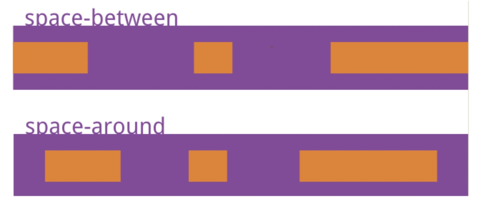

<!DOCTYPE html>
<html lang="en">
    <head>
        <meta charset="UTF-8" />
        <title>CSS | 后知后觉的个人主页</title>
        <meta name="author" content="知乐" />
        <meta name="description" content="" />
        <meta name="keywords" content="" />
        <meta name="viewport" content="width=device-width,initial-scale=1.0,maximum-scale=1.0,user-scalable=0" />
        <link rel="icon" href="/images/avatar.jpg" />
        <script src="https://cdn.staticfile.org/vue/3.2.47/vue.global.prod.min.js"></script>
<link rel="stylesheet" href="https://cdn.staticfile.org/font-awesome/6.3.0/css/all.min.css" />
<link rel="stylesheet" href="/css/fonts.min.css" />
<script> const mixins = {}; </script>

<script src="https://polyfill.io/v3/polyfill.min.js?features=default"></script>


<script src="https://cdn.staticfile.org/highlight.js/11.7.0/highlight.min.js"></script>
<link
    rel="stylesheet"
    href="https://cdn.staticfile.org/highlight.js/11.7.0/styles/github.min.css"
/>
<script src="/js/lib/highlight.js"></script>


<script src="/js/lib/preview.js"></script>


<link rel="stylesheet" href="/css/main.css" />

    <meta name="generator" content="Hexo 6.3.0"></head>
    <body>
        <div id="layout">
            <transition name="fade">
            <div id="loading" v-show="loading">
                <div id="loading-circle">
                    <h2>LOADING</h2>
                    
                </div>
            </div>
            </transition>
            <nav id="menu" :class="{ hidden: hiddenMenu, 'menu-color': menuColor}">
    <div class="desktop-menu">
        <a class="title" href="/">
            <span>后知后觉的个人主页</span>
        </a>
        
        <a href="/">
            <i class="fa-solid fa-house fa-fw"></i>
            <span>&ensp;首页</span>
        </a>
        
        <a href="/archives">
            <i class="fa-solid fa-box-archive fa-fw"></i>
            <span>&ensp;文档中心</span>
        </a>
        
    </div>
    <div id="mobile-menu">
        <div class="curtain" @click="showMenuItems = !showMenuItems" v-show="showMenuItems"></div>
        <div class="title" @click="showMenuItems = !showMenuItems">
            <i class="fa-solid fa-bars fa-fw"></i>
            <span>&emsp;后知后觉的个人主页</span>
        </div>
        <transition name="slide">
        <div class="items" v-show="showMenuItems">
            
            <a href="/">
                <div class="item">
                    <div style="min-width: 20px; max-width: 50px; width: 10%">
                        <i class="fa-solid fa-house fa-fw"></i>
                    </div>
                    <div style="min-width: 100px; max-width: 150%; width: 20%">首页</div>
                </div>
            </a>
            
            <a href="/archives">
                <div class="item">
                    <div style="min-width: 20px; max-width: 50px; width: 10%">
                        <i class="fa-solid fa-box-archive fa-fw"></i>
                    </div>
                    <div style="min-width: 100px; max-width: 150%; width: 20%">文档中心</div>
                </div>
            </a>
            
        </div>
        </transition>
    </div>
</nav>

            <transition name="into">
            <div id="main" v-show="!loading">
                <div class="article">
    <div>
        <h1>CSS</h1>
    </div>
    <div class="info">
        <span class="date">
            <span class="icon">
                <i class="fa-solid fa-calendar fa-fw"></i>
            </span>
            2024/4/17
        </span>
        
        
    </div>

    <div class="content" v-pre>
        <h3 id="1-介绍下-BFC-及其应用"><a href="#1-介绍下-BFC-及其应用" class="headerlink" title="1. 介绍下 BFC 及其应用"></a>1. 介绍下 BFC 及其应用</h3><p>参考答案：</p>
<p>所谓 BFC<em>，指的是一个独立的布局环境，</em>BFC 内部的元素布局与外部互不影响。</p>
<p>触发 BFC 的方式有很多，常见的有：</p>
<ul>
<li>设置浮动</li>
<li>overflow 设置为 auto、scroll、hidden</li>
<li>positon 设置为 absolute、fixed</li>
</ul>
<p>常见的 BFC 应用有：</p>
<ul>
<li>解决浮动元素令父元素高度坍塌的问题</li>
<li>解决非浮动元素被浮动元素覆盖问题</li>
<li>解决外边距垂直方向重合的问题</li>
</ul>
<h3 id="2-介绍下-BFC、IFC、GFC-和-FFC"><a href="#2-介绍下-BFC、IFC、GFC-和-FFC" class="headerlink" title="2. 介绍下 BFC、IFC、GFC 和 FFC"></a>2. 介绍下 BFC、IFC、GFC 和 FFC</h3><p>参考答案：</p>
<ul>
<li>BFC<em>：块级格式上下文，指的是一个独立的布局环境，</em>BFC 内部的元素布局与外部互不影响。</li>
<li>IFC：行内格式化上下文，将一块区域以行内元素的形式来格式化。</li>
<li>GFC*：网格布局格式化上下文，将一块区域以 *grid 网格的形式来格式化</li>
<li>FFC：弹性格式化上下文，将一块区域以弹性盒的形式来格式化</li>
</ul>
<h3 id="3-flex-布局如何使用？"><a href="#3-flex-布局如何使用？" class="headerlink" title="3. flex 布局如何使用？"></a>3. flex 布局如何使用？</h3><p>参考答案：</p>
<p>flex 是 Flexible Box 的缩写，意为”弹性布局”。指定容器 display: flex 即可。</p>
<p>容器有以下属性：flex-direction，flex-wrap，flex-flow，justify-content，align-items，align-content。</p>
<ul>
<li>flex-direction 属性决定主轴的方向；</li>
<li>flex-wrap 属性定义，如果一条轴线排不下，如何换行；</li>
<li>flex-flow 属性是 flex-direction 属性和 flex-wrap 属性的简写形式，默认值为 row nowrap；</li>
<li>justify-content 属性定义了项目在主轴上的对齐方式。</li>
<li>align-items 属性定义项目在交叉轴上如何对齐。</li>
<li>align-content 属性定义了多根轴线的对齐方式。如果项目只有一根轴线，该属性不起作用。</li>
</ul>
<p>项目（子元素）也有一些属性：order，flex-grow，flex-shrink，flex-basis，flex，align-self。</p>
<ul>
<li>order 属性定义项目的排列顺序。数值越小，排列越靠前，默认为 0。</li>
<li>flex-grow 属性定义项目的放大比例，默认为 0，即如果存在剩余空间，也不放大。</li>
<li>flex-shrink 属性定义了项目的缩小比例，默认为 1，即如果空间不足，该项目将缩小。</li>
<li>flex-basis 属性定义了在分配多余空间之前，项目占据的主轴空间（main size）。</li>
<li>flex 属性是 flex-grow, flex-shrink 和 flex-basis 的简写，默认值为 0 1 auto。后两个属性可选。</li>
<li>align-self 属性允许单个项目有与其他项目不一样的对齐方式，可覆盖 align-items 属性。默认值为 auto，表示继承父元素的 align-items 属性，如果没有父元素，则等同于 stretch。</li>
</ul>
<h3 id="4-怎么让一个-div-水平垂直居中"><a href="#4-怎么让一个-div-水平垂直居中" class="headerlink" title="4. 怎么让一个 div 水平垂直居中"></a>4. 怎么让一个 div 水平垂直居中</h3><p>参考答案：</p>
<p>水平垂直居中有好多种实现方式，主要就分为两类不定宽高和定宽高 以在 body 下插入一个 div 为例</p>
<p><strong>定宽高</strong></p>
<p>使用定位 + margin</p>
<pre><code class="plain">element.style &#123;
 position: absolute;
 left: 50%;
 top: 50%;
 margin-left: -250px;
 margin-top: -250px;
 width: 500px;
 height: 500px;
 background: yellow;
 z-index: 1;
&#125;
</code></pre>
<p>使用定位 + transfrom</p>
<pre><code class="plain">element.style &#123;
 position: absolute;
 left: 50%;
 top: 50%;
 width: 500px;
 height: 500px;
 background: yellow;
 z-index: 1;
 transform: translate3d(-50%,-50%,0);
&#125;
</code></pre>
<p><strong>不定宽高</strong></p>
<p>不定宽高的方法基本都适用于定宽高的情况 这里把 div 的宽高按照内容展开，使用定位 + transform 同样是适用的</p>
<pre><code class="plain">element.style &#123;
 position: absolute;
 left: 50%;
 top: 50%;
 background: yellow;
 z-index: 1;
 transform: translate3d(-50%,-50%,0);
&#125;
</code></pre>
<h3 id="5-分析比较-opacity-0、visibility-hidden、display-none-优劣和适用场景。"><a href="#5-分析比较-opacity-0、visibility-hidden、display-none-优劣和适用场景。" class="headerlink" title="5. 分析比较 opacity: 0、visibility: hidden、display: none 优劣和适用场景。"></a>5. 分析比较 opacity: 0、visibility: hidden、display: none 优劣和适用场景。</h3><p>参考答案：</p>
<ul>
<li>结构：</li>
</ul>
<p>display:none: 会让元素完全从渲染树中消失，渲染的时候不占据任何空间, 不能点击， visibility: hidden:不会让元素从渲染树消失，渲染元素继续占据空间，只是内容不可见，不能点击</p>
<p>opacity: 0: 不会让元素从渲染树消失，渲染元素继续占据空间，只是内容不可见，可以点击</p>
<ul>
<li>继承：</li>
</ul>
<p>display: none 和 opacity: 0：是非继承属性，子孙节点消失由于元素从渲染树消失造成，通过修改子孙节点属性无法显示。</p>
<p>visibility: hidden：是继承属性，子孙节点消失由于继承了 hidden，通过设置 visibility: visible;可以让子孙节点显式。</p>
<ul>
<li>性能：</li>
</ul>
<p>displaynone : 修改元素会造成文档回流,读屏器不会读取 display: none 元素内容，性能消耗较大</p>
<p>visibility:hidden: 修改元素只会造成本元素的重绘,性能消耗较少读屏器读取</p>
<p>visibility: hidden 元素内容 opacity: 0 ： 修改元素会造成重绘，性能消耗较少</p>
<h3 id="6-已知如下代码，如何修改才能让图片宽度为-300px-？注意下面代码不可修改。"><a href="#6-已知如下代码，如何修改才能让图片宽度为-300px-？注意下面代码不可修改。" class="headerlink" title="6. 已知如下代码，如何修改才能让图片宽度为 300px ？注意下面代码不可修改。"></a>6. 已知如下代码，如何修改才能让图片宽度为 300px ？注意下面代码不可修改。</h3><pre><code class="plain">&lt;img src=&quot;1.jpg&quot; style=&quot;width:480px!important;”&gt;
</code></pre>
<p>参考答案：</p>
<p><strong>CSS 方法</strong></p>
<ul>
<li>max-width:300px; 覆盖其样式</li>
<li>transform: scale(0.625) 按比例缩放图片；</li>
<li>利用 CSS 动画的样式优先级高于 !important 的特性</li>
</ul>
<p><strong>JS 方法</strong></p>
<ul>
<li>document.getElementsByTagName(“img”)[0].setAttribute(“style”,”width:300px!important;”)</li>
</ul>
<h3 id="7-如何用-css-或-js-实现多行文本溢出省略效果，考虑兼容性"><a href="#7-如何用-css-或-js-实现多行文本溢出省略效果，考虑兼容性" class="headerlink" title="7. 如何用 css 或 js 实现多行文本溢出省略效果，考虑兼容性"></a>7. 如何用 css 或 js 实现多行文本溢出省略效果，考虑兼容性</h3><p>参考答案：</p>
<p>CSS 实现方式</p>
<p>单行：</p>
<pre><code class="css">overflow: hidden;
text-overflow: ellipsis;
white-space: nowrap;
</code></pre>
<p>多行：</p>
<pre><code class="css">display: -webkit-box;
-webkit-box-orient: vertical;
-webkit-line-clamp: 3; //行数
overflow: hidden;
</code></pre>
<p>兼容：</p>
<pre><code class="css">p &#123;
  position: relative;
  line-height: 20px;
  max-height: 40px;
  overflow: hidden;
&#125;
p::after &#123;
  content: &quot;...&quot;;
  position: absolute;
  bottom: 0;
  right: 0;
  padding-left: 40px;
  background: -webkit-linear-gradient(left, transparent, #fff 55%);
  background: -o-linear-gradient(right, transparent, #fff 55%);
  background: -moz-linear-gradient(right, transparent, #fff 55%);
  background: linear-gradient(to right, transparent, #fff 55%);
&#125;
</code></pre>
<p>JS 实现方式：</p>
<ul>
<li>使用 split + 正则表达式将单词与单个文字切割出来存入 words</li>
<li>加上 ‘…’</li>
<li>判断 scrollHeight 与 clientHeight，超出的话就从 words 中 pop 一个出来</li>
</ul>
<h3 id="8-居中为什么要使用-transform（为什么不使用-marginLeft-Top）（阿里）"><a href="#8-居中为什么要使用-transform（为什么不使用-marginLeft-Top）（阿里）" class="headerlink" title="8. 居中为什么要使用 transform（为什么不使用 marginLeft/Top）（阿里）"></a>8. 居中为什么要使用 transform（为什么不使用 marginLeft/Top）（阿里）</h3><p>参考答案：</p>
<p>transform 属于合成属性（composite property），对合成属性进行 transition/animation 动画将会创建一个合成层（composite layer），这使得被动画元素在一个独立的层中进行动画。通常情况下，浏览器会将一个层的内容先绘制进一个位图中，然后再作为纹理（texture）上传到 GPU，只要该层的内容不发生改变，就没必要进行重绘（repaint），浏览器会通过重新复合（recomposite）来形成一个新的帧。</p>
<p>top/left 属于布局属性，该属性的变化会导致重排（reflow/relayout），所谓重排即指对这些节点以及受这些节点影响的其它节点，进行 CSS 计算-&gt;布局-&gt;重绘过程，浏览器需要为整个层进行重绘并重新上传到 GPU，造成了极大的性能开销。</p>
<h3 id="9-介绍下粘性布局（sticky）（网易）"><a href="#9-介绍下粘性布局（sticky）（网易）" class="headerlink" title="9. 介绍下粘性布局（sticky）（网易）"></a>9. 介绍下粘性布局（sticky）（网易）</h3><p>参考答案：</p>
<p>position 中的 sticky 值是 CSS3 新增的，设置了 sticky 值后，在屏幕范围（viewport）时该元素的位置并不受到定位影响（设置是 top、left 等属性无效），当该元素的位置将要移出偏移范围时，定位又会变成 fixed，根据设置的 left、top 等属性成固定位置的效果。</p>
<p>sticky 属性值有以下几个特点：</p>
<ul>
<li>该元素并不脱离文档流，仍然保留元素原本在文档流中的位置。</li>
<li>当元素在容器中被滚动超过指定的偏移值时，元素在容器内固定在指定位置。亦即如果你设置了 top: 50px，那么在 sticky 元素到达距离相对定位的元素顶部 50px 的位置时固定，不再向上移动。</li>
<li>元素固定的相对偏移是相对于离它最近的具有滚动框的祖先元素，如果祖先元素都不可以滚动，那么是相对于 viewport 来计算元素的偏移量</li>
</ul>
<h3 id="10-说出-space-between-和-space-around-的区别？（携程）"><a href="#10-说出-space-between-和-space-around-的区别？（携程）" class="headerlink" title="10. 说出 space-between 和 space-around 的区别？（携程）"></a>10. 说出 space-between 和 space-around 的区别？（携程）</h3><p>参考答案：</p>
<p>这个是 flex 布局的内容，其实就是一个边距的区别，按水平布局来说，space-between 是两端对齐，在左右两侧没有边距，而 space-around 是每个 子项目左右方向的 margin 相等，所以两个 item 中间的间距会比较大。</p>
<p>如图所示：</p>
<p></p>
<h3 id="11-CSS3-中-transition-和-animation-的属性分别有哪些（哔哩哔哩）"><a href="#11-CSS3-中-transition-和-animation-的属性分别有哪些（哔哩哔哩）" class="headerlink" title="11. CSS3 中 transition 和 animation 的属性分别有哪些（哔哩哔哩）"></a>11. CSS3 中 transition 和 animation 的属性分别有哪些（哔哩哔哩）</h3><p>参考答案：</p>
<p>transition 过渡动画：</p>
<ul>
<li>transition-property*：指定过渡的 *CSS 属性</li>
<li>transition-duration：指定过渡所需的完成时间</li>
<li>transition-timing-function：指定过渡函数</li>
<li>transition-delay：指定过渡的延迟时间</li>
</ul>
<p>animation 关键帧动画：</p>
<ul>
<li>animation-name：指定要绑定到选择器的关键帧的名称</li>
<li>animation-duration：动画指定需要多少秒或毫秒完成</li>
<li>animation-timing-function：设置动画将如何完成一个周期</li>
<li>animation-delay：设置动画在启动前的延迟间隔</li>
<li>animation-iteration-count：定义动画的播放次数</li>
<li>animation-direction：指定是否应该轮流反向播放动画</li>
<li>animation-fill-mode：规定当动画不播放时（当动画完成时，或当动画有一个延迟未开始播放时），要应用到元素的样式</li>
<li>animation-play-state：指定动画是否正在运行或已暂停</li>
</ul>
<h3 id="12-隐藏页面中的某个元素的方法有哪些？"><a href="#12-隐藏页面中的某个元素的方法有哪些？" class="headerlink" title="12. 隐藏页面中的某个元素的方法有哪些？"></a>12. 隐藏页面中的某个元素的方法有哪些？</h3><p>参考答案：</p>
<ol>
<li>隐藏类型</li>
</ol>
<p>屏幕并不是唯一的输出机制，比如说屏幕上看不见的元素（隐藏的元素），其中一些依然能够被读屏软件阅读出来（因为读屏软件依赖于可访问性树来阐述）。为了消除它们之间的歧义，我们将其归为三大类：</p>
<ul>
<li>完全隐藏：元素从渲染树中消失，不占据空间。</li>
<li>视觉上的隐藏：屏幕中不可见，占据空间。</li>
<li>语义上的隐藏：读屏软件不可读，但正常占据空。</li>
</ul>
<p><strong>完全隐藏</strong></p>
<p>(1) display 属性</p>
<pre><code class="css">display: none;
</code></pre>
<p>(2) hidden 属性 HTML5 新增属性，相当于 display: none</p>
<pre><code class="html">&lt;div hidden&gt;&lt;/div&gt;
</code></pre>
<p><strong>视觉上的隐藏</strong></p>
<p>(1) 设置 posoition 为 absolute 或 fixed， 通过设置 top、left 等值，将其移出可视区域。</p>
<pre><code class="css">position: absolute;
left: -99999px;
</code></pre>
<p>(2) 设置 position 为 relative，通过设置 top、left 等值，将其移出可视区域。</p>
<pre><code class="css">position: relative;
left: -99999px;
height: 0;
</code></pre>
<p>(3) 设置 margin 值，将其移出可视区域范围（可视区域占位）。</p>
<pre><code class="plain">margin-left: -99999px;
height: 0;
</code></pre>
<p>语义上隐藏</p>
<p>aria-hidden 属性</p>
<p>读屏软件不可读，占据空间，可见。</p>
<pre><code class="plain">&lt;div aria-hidden=&quot;true&quot;&gt;
&lt;/div&gt;
</code></pre>
<h3 id="13-层叠上下文"><a href="#13-层叠上下文" class="headerlink" title="13. 层叠上下文"></a>13. 层叠上下文</h3><p>参考答案：</p>
<p><strong>层叠上下文概念</strong></p>
<p>在 CSS2.1 规范中，每个盒模型的位置是三维的，分别是平面画布上的 X 轴，Y 轴以及表示层叠的 Z 轴。</p>
<p>一般情况下，元素在页面上沿 X 轴 Y 轴平铺，我们察觉不到它们在 Z 轴上的层叠关系。而一旦元素发生堆叠，这时就能发现某个元素可能覆盖了另一个元素或者被另一个元素覆盖。</p>
<p><strong>层叠上下文触发条件</strong></p>
<ul>
<li>HTML 中的根元素 HTML 本身就具有层叠上下文，称为“根层叠上下文”。</li>
<li>普通元素设置 position 属性为非 static 值并设置 z-index 属性为具体数值，产生层叠上下文</li>
<li>CSS3 中的新属性也可以产生层叠上下文</li>
</ul>
<p><strong>层叠顺序</strong></p>
<p>“层叠顺序”（stacking order*）表示元素发生层叠时按照特定的顺序规则在 *Z 轴上垂直显示。</p>
<p>说简单一点就是当元素处于同一层叠上下文内时如何进行层叠判断。</p>
<p>具体的层叠等级如下图：</p>
<p></p>
<h3 id="14-分析比较-opacity-0、visibility-hidden、display-none-优劣和适用场景"><a href="#14-分析比较-opacity-0、visibility-hidden、display-none-优劣和适用场景" class="headerlink" title="14. 分析比较 opacity: 0、visibility: hidden、display: none 优劣和适用场景"></a>14. 分析比较 opacity: 0、visibility: hidden、display: none 优劣和适用场景</h3><p>参考答案：</p>
<ol>
<li>display: none (不占空间，不能点击)（场景，显示出原来这里不存在的结构）</li>
<li>visibility: hidden（占据空间，不能点击）（场景：显示不会导致页面结构发生变动，不会撑开）</li>
<li>opacity: 0（占据空间，可以点击）（场景：可以跟 transition 搭配）</li>
</ol>
<h3 id="15-讲一下-png8、png16、png32-的区别，并简单讲讲-png-的压缩原理"><a href="#15-讲一下-png8、png16、png32-的区别，并简单讲讲-png-的压缩原理" class="headerlink" title="15. 讲一下 png8、png16、png32*的区别，并简单讲讲 *png 的压缩原理"></a>15. 讲一下 png8、png16、png32*的区别，并简单讲讲 *png 的压缩原理</h3><p>参考答案：</p>
<p>PNG 图片主要有三个类型，分别为 PNG 8/ PNG 24 / PNG 32。</p>
<ul>
<li>PNG 8：PNG 8 中的 8，其实指的是 8bits，相当于用 2^8（2 的 8 次方）大小来存储一张图片的颜色种类，2^8 等于 256，也就是说 PNG 8 能存储 256 种颜色，一张图片如果颜色种类很少，将它设置成 PNG 8 得图片类型是非常适合的。</li>
<li>PNG 24：PNG 24 中的 24，相当于 3 乘以 8 等于 24，就是用三个 8bits 分别去表示 R（红）、G（绿）、B（蓝）。R(0-255),G(0-255),B(0-255)，可以表达 256 乘以 256 乘以 256=16777216 种颜色的图片，这样 PNG 24 就能比 PNG 8 表示色彩更丰富的图片。但是所占用的空间相对就更大了。</li>
<li>PNG 32：PNG 32 中的 32，相当于 PNG 24 加上 8bits 的透明颜色通道，就相当于 R（红）、G（绿）、B（蓝）、A（透明）。R(0<del>255),G(0</del>255),B(0<del>255),A(0</del>255)。比 PNG 24 多了一个 A（透明），也就是说 PNG 32 能表示跟 PNG 24 一样多的色彩，并且还支持 256 种透明的颜色，能表示更加丰富的图片颜色类型。</li>
</ul>
<p>PNG 图片的压缩，分两个阶段：</p>
<ul>
<li>预解析（Prediction）：这个阶段就是对 png 图片进行一个预处理，处理后让它更方便后续的压缩。</li>
<li>压缩（Compression）：执行 Deflate 压缩，该算法结合了 LZ77 算法和 Huffman 算法对图片进行编码。</li>
</ul>
<h3 id="16-说说渐进增强和优雅降级"><a href="#16-说说渐进增强和优雅降级" class="headerlink" title="16. 说说渐进增强和优雅降级"></a>16. 说说渐进增强和优雅降级</h3><p>参考答案：</p>
<p>这并不是一个新的概念，其实就是以前提到的”向上兼容”和”向下兼容”。渐进增强相当于向上兼容，优雅降级相当于向下兼容。向下兼容指的是高版本支持低版本，或者说后期开发的版本能兼容早期开发的版本。</p>
<p>在确定用户群体的前提下，渐进增强：针对低版本浏览器进行页面构建，保证基本功能，再针对高级浏览器进行效果、交互等改进和追加功能，达到更好的用户体验。优雅降级：一开始就构建完整的功能，再针对低版本浏览器进行兼容。区别：优雅降级是从复杂的现状开始并试图减少用户体验的供给，而渐进增强则是从一个基础的、能够起到作用的版本开始再不断扩充，以适应未来环境的需要。</p>
<p>绝大多少的大公司都是采用渐进增强的方式，因为业务优先，提升用户体验永远不会排在最前面。</p>
<ul>
<li>例如新浪微博网站这样亿级用户的网站，前端的更新绝不可能追求某个特效而不考虑低版本用户是否可用。一定是确保低版本到高版本的可访问性再渐进增强。</li>
<li>如果开发的是一面面向青少面的软件或网站，你明确这个群体的人总是喜欢尝试新鲜事物，喜欢炫酷的特效，喜欢把软件更新至最新版本，这种情况再考虑优雅降级。</li>
</ul>
<h3 id="17-介绍下-positon-属性"><a href="#17-介绍下-positon-属性" class="headerlink" title="17. 介绍下 positon 属性"></a>17. 介绍下 positon 属性</h3><p>参考答案：</p>
<p>position 属性主要用来定位，常见的属性值如下：</p>
<ul>
<li>absolute 绝对定位，相对于 static 定位以外的第一个父元素进行定位。</li>
<li>relative 相对定位，相对于其自身正常位置进行定位。</li>
<li>fixed 固定定位，相对于浏览器窗口进行定位。</li>
<li>static 默认值。没有定位，元素出现在正常的流中。</li>
<li>inherit 规定应该从父元素继承 position 属性的值。</li>
<li>sticky 粘性定位，当元素在容器中被滚动超过指定的偏移值时，元素在容器内固定在指定位置。</li>
</ul>
<h3 id="18-如何用-CSS-实现一个三角形"><a href="#18-如何用-CSS-实现一个三角形" class="headerlink" title="18. 如何用 CSS 实现一个三角形"></a>18. 如何用 CSS 实现一个三角形</h3><p>参考答案：</p>
<p>可以利用 border 属性</p>
<p>利用盒模型的 border 属性上下左右边框交界处会呈现出平滑的斜线这个特点，通过设置不同的上下左右边框宽度或者颜色即可得到三角形或者梯形。</p>
<p>如果想实现其中的任一个三角形，把其他方向上的 border-color 都设置成透明即可。</p>
<p>示例代码如下：</p>
<pre><code class="html">&lt;div&gt;&lt;/div&gt;
</code></pre>
<pre><code class="css">div &#123;
  width: 0;
  height: 0;
  border: 10px solid red;
  border-top-color: transparent;
  border-left-color: transparent;
  border-right-color: transparent;
&#125;
</code></pre>
<h3 id="19-如何实现一个自适应的正方形"><a href="#19-如何实现一个自适应的正方形" class="headerlink" title="19. 如何实现一个自适应的正方形"></a>19. 如何实现一个自适应的正方形</h3><p>参考答案：</p>
<p><strong>方法 1：利用 CSS3 的 vw 单位</strong></p>
<p>vw 会把视口的宽度平均分为 100 份</p>
<pre><code class="plain">.square &#123;
 width: 10vw;
 height: 10vw;
 background: red;
&#125;
</code></pre>
<p><strong>方法 2：利用 margin 或者 padding 的百分比计算是参照父元素的 width 属性</strong></p>
<pre><code class="plain">.square &#123;
 width: 10%;
 padding-bottom: 10%;
 height: 0; // 防止内容撑开多余的高度
 background: red;
&#125;
</code></pre>
<h3 id="20-如何实现三栏布局"><a href="#20-如何实现三栏布局" class="headerlink" title="20. 如何实现三栏布局"></a>20. 如何实现三栏布局</h3><p>参考答案：</p>
<p>三栏布局是很常见的一种页面布局方式。左右固定，中间自适应。实现方式有很多种方法。</p>
<p><strong>第一种：flex</strong></p>
<pre><code class="plain">&lt;div class=&quot;container&quot;&gt;
 &lt;div class=&quot;left&quot;&gt;left&lt;/div&gt;
 &lt;div class=&quot;main&quot;&gt;main&lt;/div&gt;
 &lt;div class=&quot;right&quot;&gt;right&lt;/div&gt;
&lt;/div&gt;
.container&#123;
 display: flex;
&#125;
.left&#123;
 flex-basis:200px;
 background: green;
&#125;
.main&#123;
 flex: 1;
 background: red;
&#125;
.right&#123;
 flex-basis:200px;
 background: green;
&#125;
</code></pre>
<p><strong>第二种：position + margin</strong></p>
<pre><code class="plain">&lt;div class=&quot;container&quot;&gt;
 &lt;div class=&quot;left&quot;&gt;left&lt;/div&gt;
 &lt;div class=&quot;right&quot;&gt;right&lt;/div&gt;
 &lt;div class=&quot;main&quot;&gt;main&lt;/div&gt;
&lt;/div&gt;
body,html&#123;
 padding: 0;
 margin: 0;
&#125;
.left,.right&#123;
 position: absolute;
 top: 0;
 background: red;
&#125;
.left&#123;
 left: 0;
 width: 200px;
&#125;
.right&#123;
 right: 0;
 width: 200px;
&#125;
.main&#123;
 margin: 0 200px ;
 background: green;
&#125;
</code></pre>
<p><strong>第三种：float + margin</strong></p>
<pre><code class="plain">&lt;div class=&quot;container&quot;&gt;
 &lt;div class=&quot;left&quot;&gt;left&lt;/div&gt;
 &lt;div class=&quot;right&quot;&gt;right&lt;/div&gt;
 &lt;div class=&quot;main&quot;&gt;main&lt;/div&gt;
&lt;/div&gt;
body,html&#123;
 padding:0;
 margin: 0;
&#125;
.left&#123;
 float:left;
 width:200px;
 background:red;
&#125;
.main&#123;
 margin:0 200px;
 background: green;
&#125;
.right&#123;
 float:right;
 width:200px;
 background:red;
&#125;
</code></pre>
<h3 id="21-import-和-link-区别"><a href="#21-import-和-link-区别" class="headerlink" title="21. import 和 link 区别"></a>21. import 和 link 区别</h3><p>参考答案：</p>
<ol>
<li>从属关系区别</li>
</ol>
<p>@import 是 CSS 提供的语法规则，只有导入样式表的作用；link 是 HTML 提供的标签，不仅可以加载 CSS 文件，还可以定义 RSS、rel 连接属性等。</p>
<ol>
<li>加载顺序区别</li>
</ol>
<p>加载页面时，link 标签引入的 CSS 被同时加载；@import 引入的 CSS 将在页面加载完毕后被加载。</p>
<ol>
<li>兼容性区别</li>
</ol>
<p>@import 是 CSS2.1 才有的语法，故只可在 IE5+ 才能识别；link 标签作为 HTML 元素，不存在兼容性问题。</p>
<ol>
<li>DOM 可控性区别</li>
</ol>
<p>可以通过 JS 操作 DOM ，插入 link 标签来改变样式；由于 DOM 方法是基于文档的，无法使用@import 的方式插入样式。</p>
<h3 id="22-说说你对-BFC-的理解"><a href="#22-说说你对-BFC-的理解" class="headerlink" title="22. 说说你对 BFC 的理解"></a>22. 说说你对 BFC 的理解</h3><p>参考答案：</p>
<p>块级格式化上下文 Block Formatting Context 是 CSS 规范中一个概念，决定元素的内容如何渲染以及与其他元素的关系。存在 5 条规则：</p>
<ol>
<li>BFC 有隔离作用，内部元素不受外部元素影响，反之亦然。</li>
<li>一个元素只能存在于一个 BFC 中，如果能同时存在于两个 BFC 中，那么就违反了 BFC 的隔离原则。</li>
<li>BFC 内的元素按正常流排列，元素间的间隙由元素外边距控制。</li>
<li>BFC 中的内容不会与外面的浮动元素重叠。</li>
<li>计算 BFC 的高度需要包括 BFC 内的浮动子元素的高度。</li>
</ol>
<h3 id="23-清除浮动的方法"><a href="#23-清除浮动的方法" class="headerlink" title="23. 清除浮动的方法"></a>23. 清除浮动的方法</h3><p>参考答案：</p>
<ul>
<li>clear 清除浮动（添加空 div 法）在浮动元素下方添加空 div，并给该元素写 css 样式： {clear:both;height:0;overflow:hidden;}</li>
<li>给浮动元素父级设置高度</li>
<li>父级同时浮动（需要给父级同级元素添加浮动）</li>
<li>父级设置成 inline-block，其 margin: 0 auto 居中方式失效</li>
<li>给父级添加 overflow:hidden 清除浮动方法</li>
<li>万能清除法 after 伪类清浮动（现在主流方法，推荐使用）</li>
</ul>
<h3 id="24-说说选择器的权重计算方式"><a href="#24-说说选择器的权重计算方式" class="headerlink" title="24. 说说选择器的权重计算方式"></a>24. 说说选择器的权重计算方式</h3><p>参考答案：</p>
<p>!important 最高，* 为 0，行内样式 A 组加一，id 选择器 B 组加一，类、伪类、属性选择器 C 组加一，元素、伪元素 D 组加一。</p>
<p></p>
<p>其中 A 组权重值为 1000，B 组权重值为 100，C 组权重值为 10，D 组权重值为 1。</p>
<h3 id="25-css-reset-和-normalize-css-有什么区别？"><a href="#25-css-reset-和-normalize-css-有什么区别？" class="headerlink" title="25. css reset 和 normalize.css 有什么区别？"></a>25. css reset 和 normalize.css 有什么区别？</h3><p>参考答案：</p>
<ul>
<li>两者都是通过重置样式，保持浏览器样式的一致性</li>
<li>前者几乎为所有标签添加了样式，后者保持了许多浏览器样式，保持尽可能的一致</li>
<li>后者修复了常见的桌面端和移动端浏览器的 bug：包含了 HTML5 元素的显示设置、预格式化文字的 font-size 问题、在 IE9 中 SVG 的溢出、许多出现在各浏览器和操作系统中的与表单相关的 bug。</li>
<li>前者中含有大段的继承链</li>
<li>后者模块化，文档较前者来说丰富</li>
</ul>
<h3 id="26-说说两种盒模型以及区别"><a href="#26-说说两种盒模型以及区别" class="headerlink" title="26. 说说两种盒模型以及区别"></a>26. 说说两种盒模型以及区别</h3><p>参考答案：</p>
<p>盒模型也称为框模型，就是从盒子顶部俯视所得的一张平面图，用于描述元素所占用的空间。它有两种盒模型，W3C 盒模型和 IE 盒模型（IE6 以下，不包括 IE6 以及怪异模式下的 IE5.5+）</p>
<p>理论上两者的主要区别是二者的盒子宽高是否包括元素的边框和内边距。当用 CSS 给给某个元素定义高或宽时，IE 盒模型中内容的宽或高将会包含内边距和边框，而 W3C 盒模型并不会。</p>
<h3 id="27-如何避免重绘或者重排？"><a href="#27-如何避免重绘或者重排？" class="headerlink" title="27. 如何避免重绘或者重排？"></a>27. 如何避免重绘或者重排？</h3><p>参考答案：</p>
<ol>
<li><strong>集中改变样式</strong></li>
</ol>
<p>我们往往通过改变 class 的方式来集中改变样式</p>
<pre><code class="plain">// 判断是否是黑色系样式
const theme = isDark ? &#39;dark&#39; : &#39;light&#39;

// 根据判断来设置不同的class
ele.setAttribute(&#39;className&#39;, theme)
</code></pre>
<ol>
<li><strong>使用 DocumentFragment</strong></li>
</ol>
<p>我们可以通过 createDocumentFragment 创建一个游离于 DOM 树之外的节点，然后在此节点上批量操作，最后插入 DOM 树中，因此只触发一次重排</p>
<pre><code class="plain">var fragment = document.createDocumentFragment();

for (let i = 0;i&lt;10;i++)&#123;
  let node = document.createElement(&quot;p&quot;);
  node.innerHTML = i;
  fragment.appendChild(node);
&#125;

document.body.appendChild(fragment);
</code></pre>
<ol>
<li><strong>提升为合成层</strong></li>
</ol>
<p>将元素提升为合成层有以下优点：</p>
<ul>
<li>合成层的位图，会交由 GPU 合成，比 CPU 处理要快</li>
<li>当需要 repaint 时，只需要 repaint 本身，不会影响到其他的层</li>
<li>对于 transform 和 opacity 效果，不会触发 layout 和 paint</li>
</ul>
<p>提升合成层的最好方式是使用 CSS 的 will-change 属性：</p>
<pre><code class="plain">#target &#123;
  will-change: transform;
&#125;
</code></pre>
<h3 id="28-如何触发重排和重绘？"><a href="#28-如何触发重排和重绘？" class="headerlink" title="28. 如何触发重排和重绘？"></a>28. 如何触发重排和重绘？</h3><p>参考答案：</p>
<p>任何改变用来构建渲染树的信息都会导致一次重排或重绘：</p>
<ul>
<li>添加、删除、更新 DOM 节点</li>
<li>通过 display: none 隐藏一个 DOM 节点-触发重排和重绘</li>
<li>通过 visibility: hidden 隐藏一个 DOM 节点-只触发重绘，因为没有几何变化</li>
<li>移动或者给页面中的 DOM 节点添加动画</li>
<li>添加一个样式表，调整样式属性</li>
<li>用户行为，例如调整窗口大小，改变字号，或者滚动。</li>
</ul>
<h3 id="29-重绘与重排的区别？"><a href="#29-重绘与重排的区别？" class="headerlink" title="29. 重绘与重排的区别？"></a>29. 重绘与重排的区别？</h3><p>参考答案：</p>
<ul>
<li>重排: 部分渲染树（或者整个渲染树）需要重新分析并且节点尺寸需要重新计算，表现为重新生成布局，重新排列元素</li>
<li>重绘: 由于节点的几何属性发生改变或者由于样式发生改变，例如改变元素背景色时，屏幕上的部分内容需要更新，表现为某些元素的外观被改变</li>
</ul>
<p>单单改变元素的外观，肯定不会引起网页重新生成布局，但当浏览器完成重排之后，将会重新绘制受到此次重排影响的部分</p>
<p>重排和重绘代价是高昂的，它们会破坏用户体验，并且让 UI 展示非常迟缓，而相比之下重排的性能影响更大，在两者无法避免的情况下，一般我们宁可选择代价更小的重绘。</p>
<p>『重绘』不一定会出现『重排』，『重排』必然会出现『重绘』。</p>
<h3 id="30-如何优化图片"><a href="#30-如何优化图片" class="headerlink" title="30. 如何优化图片"></a>30. 如何优化图片</h3><p>参考答案：</p>
<ol>
<li>对于很多装饰类图片，尽量不用图片，因为这类修饰图片完全可以用 CSS 去代替。</li>
<li>对于移动端来说，屏幕宽度就那么点，完全没有必要去加载原图浪费带宽。一般图片都用 CDN 加载，可以计算出适配屏幕的宽度，然后去请求相应裁剪好的图片。</li>
<li>小图使用 base64 格式</li>
<li>将多个图标文件整合到一张图片中（雪碧图）</li>
<li>选择正确的图片格式：</li>
</ol>
<ul>
<li>对于能够显示 WebP 格式的浏览器尽量使用 WebP 格式。因为 WebP 格式具有更好的图像数据压缩算法，能带来更小的图片体积，而且拥有肉眼识别无差异的图像质量，缺点就是兼容性并不好</li>
<li>小图使用 PNG，其实对于大部分图标这类图片，完全可以使用 SVG 代替</li>
<li>照片使用 JPEG</li>
</ul>
<h3 id="33-如何在页面上实现一个圆形的可点击区域？"><a href="#33-如何在页面上实现一个圆形的可点击区域？" class="headerlink" title="33. 如何在页面上实现一个圆形的可点击区域？"></a>33. 如何在页面上实现一个圆形的可点击区域？</h3><p>参考答案：</p>
<p>首先使用 CSS3 新增的 border-radius 属性来将一个区域变成圆形，然后再使用 JS 来绑定事件。</p>
<h3 id="34-什么是渐进式渲染（progressive-rendering）？"><a href="#34-什么是渐进式渲染（progressive-rendering）？" class="headerlink" title="34. 什么是渐进式渲染（progressive rendering）？"></a>34. 什么是渐进式渲染（progressive rendering）？</h3><p>参考答案：</p>
<p>渐进式渲染是用于提高网页性能（尤其是提高用户感知的加载速度），以尽快呈现页面的技术。</p>
<p>在以前互联网带宽较小的时期，这种技术更为普遍。如今，移动终端的盛行，而移动网络往往不稳定，渐进式渲染在现代前端开发中仍然有用武之地。</p>
<p>一些举例：</p>
<ul>
<li>图片懒加载——页面上的图片不会一次性全部加载。当用户滚动页面到图片部分时，JavaScript 将加载并显示图像。</li>
<li>确定显示内容的优先级（分层次渲染）——为了尽快将页面呈现给用户，页面只包含基本的最少量的 CSS、脚本和内容，然后可以使用延迟加载脚本或监听 DOMContentLoaded/load 事件加载其他资源和内容。</li>
<li>异步加载 HTML 片段——当页面通过后台渲染时，把 HTML 拆分，通过异步请求，分块发送给浏览器。</li>
</ul>
<h3 id="35-CSS3-新增了那些东西？"><a href="#35-CSS3-新增了那些东西？" class="headerlink" title="35. CSS3 新增了那些东西？"></a>35. CSS3 新增了那些东西？</h3><p>参考答案：</p>
<p>CSS3 新增东西众多，这里列举出一些关键的新增内容：</p>
<ul>
<li>选择器</li>
<li>盒子模型属性：border-radius、box-shadow、border-image</li>
<li>背景：background-size、background-origin、background-clip</li>
<li>文本效果：text-shadow、word-wrap</li>
<li>颜色：新增 RGBA，HSLA 模式</li>
<li>渐变：线性渐变、径向渐变</li>
<li>字体：@font-face</li>
<li>2D/3D 转换：transform、transform-origin</li>
<li>过渡与动画：transition、@keyframes、animation</li>
<li>多列布局</li>
<li>媒体查询</li>
</ul>
<h3 id="36-我想实现一根只有-1px-的长线怎么实现"><a href="#36-我想实现一根只有-1px-的长线怎么实现" class="headerlink" title="36. 我想实现一根只有 1px 的长线怎么实现?"></a>36. 我想实现一根只有 1px 的长线怎么实现?</h3><p>参考答案：</p>
<p>实现的方式很多，下面是一种参考方案：</p>
<pre><code class="css">.line &#123;
  width: 100%;
  height: 1px;
  overflow: hidden;
  font-size: 0px;
  border-bottom: dashed 1px #ccc;
&#125;
</code></pre>
<pre><code class="html">&lt;div class=&quot;line&quot;&gt;&lt;/div&gt;
</code></pre>
<h3 id="38-box-sizing-有什么作用？"><a href="#38-box-sizing-有什么作用？" class="headerlink" title="38. box-sizing 有什么作用？"></a>38. box-sizing 有什么作用？</h3><p>参考答案：</p>
<p>box-sizing 是用于告诉浏览器如何计算一个元素是总宽度和总高度，主要用来切换标准盒模型和 IE 盒子。</p>
<ul>
<li>标准盒模型 box-sizing: content-box content-box: width = content width; height = content height</li>
<li>IE 盒模型 box-sizing: border-box border-box: width = border + padding + content width heigth = border + padding + content heigth</li>
</ul>
<h3 id="39-img-标签在页面中有-1px-的边框，怎么处理"><a href="#39-img-标签在页面中有-1px-的边框，怎么处理" class="headerlink" title="39. img 标签在页面中有 1px 的边框，怎么处理"></a>39. img 标签在页面中有 1px 的边框，怎么处理</h3><p>参考答案：</p>
<pre><code class="css">img &#123;
  border: 0;
&#125;
</code></pre>
<h3 id="40-如何绝对居中（不用定位）（看书网）"><a href="#40-如何绝对居中（不用定位）（看书网）" class="headerlink" title="40. 如何绝对居中（不用定位）（看书网）"></a>40. 如何绝对居中（不用定位）（看书网）</h3><p>参考答案：</p>
<p>方法一：</p>
<p>使用 flex 弹性盒来绝对居中</p>
<p>方法二：</p>
<p>设置 margin-left 为 calc(50% - 50px);</p>
<h3 id="42-我有-5-个-div-在一行，我要让-div-与-div-直接间距-10px-且最左最右两边的-div-据边框-10px，同时在我改变窗口大小时，这个-10px-不能变，div-根据窗口改变大小（长天星斗）"><a href="#42-我有-5-个-div-在一行，我要让-div-与-div-直接间距-10px-且最左最右两边的-div-据边框-10px，同时在我改变窗口大小时，这个-10px-不能变，div-根据窗口改变大小（长天星斗）" class="headerlink" title="42. 我有 5 个 div 在一行，我要让 div 与 div 直接间距 10px 且最左最右两边的 div 据边框 10px，同时在我改变窗口大小时，这个 10px 不能变，div 根据窗口改变大小（长天星斗）"></a>42. 我有 5 个 div 在一行，我要让 div 与 div 直接间距 10px 且最左最右两边的 div 据边框 10px，同时在我改变窗口大小时，这个 10px 不能变，div 根据窗口改变大小（长天星斗）</h3><p>参考答案：</p>
<pre><code class="css">* &#123;
  margin: 0;
&#125;
.container &#123;
  display: flex;
&#125;
.container &gt; div &#123;
  outline: 1px solid;
  margin: 0 5px;
  flex-grow: 1;
&#125;

.container &gt; div:first-child &#123;
  margin-left: 10px;
&#125;
.container &gt; div:last-child &#123;
  margin-right: 10px;
&#125;
</code></pre>
<pre><code class="html">&lt;div class=&quot;container&quot;&gt;
  &lt;div&gt;1&lt;/div&gt;
  &lt;div&gt;2&lt;/div&gt;
  &lt;div&gt;3&lt;/div&gt;
  &lt;div&gt;4&lt;/div&gt;
  &lt;div&gt;5&lt;/div&gt;
&lt;/div&gt;
</code></pre>
<h3 id="43-bootstrap-响应式的原理是什么"><a href="#43-bootstrap-响应式的原理是什么" class="headerlink" title="43. bootstrap 响应式的原理是什么"></a>43. bootstrap 响应式的原理是什么</h3><p>参考答案：</p>
<p>bootstrap 使用的是栅格布局。栅格布局的实现原理，是通过定义容器大小，平分 12 份，再调整内外边距，最后结合媒体查询，就制作出了强大的响应式网格系统。</p>
<h3 id="44-如何做响应式？"><a href="#44-如何做响应式？" class="headerlink" title="44. 如何做响应式？"></a>44. 如何做响应式？</h3><p>参考答案：</p>
<p>可以使用 CSS3 新增的媒体查询。</p>
<p>媒体查询的语法如下：</p>
<pre><code class="css">@media mediatype and|not|only (media feature) &#123; CSS-Code;&#125;
</code></pre>
<h3 id="45-什么是响应式设计"><a href="#45-什么是响应式设计" class="headerlink" title="45. 什么是响应式设计"></a>45. 什么是响应式设计</h3><p>参考答案：</p>
<p>响应式设计简而言之，就是一个网站能够兼容多个终端——而不是为每个终端做一个特定的版本。</p>
<p>优点：</p>
<ul>
<li>面对不同分辨率设备灵活性强</li>
<li>能够快捷解决多设备显示适应问题</li>
</ul>
<p>缺点：</p>
<p>兼容各种设备工作量大，效率低下</p>
<p>代码累赘，会出现隐藏无用的元素，加载时间加长</p>
<p>其实这是一种折中性质的设计解决方案，多方面因素影响而达不到最佳效果</p>
<p>一定程度上改变了网站原有的布局结构，会出现用户混淆的情况</p>
<p>具体步骤：</p>
<ul>
<li>第一步：meta 标签</li>
</ul>
<p>为了适应屏幕，多数的移动浏览器会把 HTML 网页缩放到设备屏幕的宽度。你可以使用 meta 标签的 viewport 属性来设置。下面的代码告诉浏览器使用设备屏幕宽度作为内容的宽度，并且忽视初始的宽度设置。这段代码写在 <head>里面</p>
<pre><code class="plain">&lt;meta name=&quot;viewport&quot; content=&quot;width=device-width, initial-scale=1.0&quot;&gt;
</code></pre>
<p>IE8 及以下的浏览器不支持 media query。你可以使用 media-queries.js 或 respond.js 。这样 IE 就能支持 media query 了。</p>
<pre><code class="plain">&lt;!--[if lt IE 9]&gt; &lt;script src=&quot;http://css3-mediaqueries-js.googlecode.com/svn/trunk/css3-mediaqueries.js&quot;&gt;&lt;/script&gt; &lt;![endif]--&gt;
</code></pre>
<ul>
<li>第二步：HTML 结构</li>
</ul>
<p>这个例子里面，有 header、content、sidebar 和 footer 等基本的网页布局。</p>
<p>header 有固定的高 180px，content 容器的宽是 600px，sidebar 的宽是 300px。</p>
<ul>
<li>第三步：Media Queries</li>
</ul>
<p>CSS3 media query 响应式网页设计的关键。它像一个 if 语句，告诉浏览器如何根据特定的屏幕宽口来加载网页。</p>
<p>下面是一个媒体查询示例代码：</p>
<pre><code class="plain">@media screen and (max-width: 300px) &#123;
    body &#123;
        background-color:lightblue;
    &#125;
&#125;
</code></pre>
<p>如果文档宽度小于 300 像素则修改背景演示(background-color)</p>
<h3 id="46-块级元素转行内元素除了-display-inline-还有什么？"><a href="#46-块级元素转行内元素除了-display-inline-还有什么？" class="headerlink" title="46. 块级元素转行内元素除了 display:inline 还有什么？"></a>46. 块级元素转行内元素除了 display:inline 还有什么？</h3><p>参考答案：</p>
<p>display:inline-block</p>
<h3 id="47-对-CSS-hack-技术的理解"><a href="#47-对-CSS-hack-技术的理解" class="headerlink" title="47. 对 CSS hack 技术的理解"></a>47. 对 CSS hack 技术的理解</h3><p>参考答案：</p>
<p><strong>什么是 CSS hack</strong> 由于不同厂商的流览器或某浏览器的不同版本（如 IE6-IE11,Firefox/Safari/Opera/Chrome 等），对 CSS 的支持、解析不一样，导致在不同浏览器的环境中呈现出不一致的页面展现效果。这时，我们为了获得统一的页面效果，就需要针对不同的浏览器或不同版本写特定的 CSS 样式，我们把这个针对不同的浏览器/不同版本写相应的 CSS code 的过程，叫做 CSS hack!</p>
<p><strong>CSS hack 的原理</strong> 由于不同的浏览器和浏览器各版本对 CSS 的支持及解析结果不一样，以及 CSS 优先级对浏览器展现效果的影响，我们可以据此针对不同的浏览器情景来应用不同的 CSS。</p>
<p><strong>CSS hack 分类</strong> CSS Hack 大致有 3 种表现形式，CSS 属性前缀法、选择器前缀法以及 IE 条件注释法（即 HTML 头部引用 if IE）Hack，实际项目中 CSS Hack 大部分是针对 IE 浏览器不同版本之间的表现差异而引入的。</p>
<ul>
<li>属性前缀法(即类内部 Hack)：例如 IE6 能识别下划线””和星号” _ “，IE7 能识别星号” _ “，但不能识别下划线””，IE6~IE10 都认识”\9”，但 firefox 前述三个都不能认识。</li>
<li>选择器前缀法(即选择器 Hack)：例如 IE6 能识别 html .class{}，IE7 能识别+html .class{}或者*:first-child+html .class{}。</li>
<li>IE 条件注释法(即 HTML 条件注释 Hack)：针对所有 IE(注：IE10+已经不再支持条件注释)： <!--[if IE]>IE浏览器显示的内容 <![endif]-->，针对 IE6 及以下版本： <!--[if lt IE 6]>只在IE6-显示的内容 <![endif]-->。这类 Hack 不仅对 CSS 生效，对写在判断语句里面的所有代码都会生效。</li>
</ul>
<p>下面是微软官方推荐使用的 hack 方式：</p>
<pre><code class="plain">只在IE下生效&lt;!--[if IE]&gt;  这段文字只在IE浏览器显示&lt;![endif]--&gt;只在IE6下生效&lt;!--[if IE 6]&gt;  这段文字只在IE6浏览器显示&lt;![endif]--&gt;只在IE6以上版本生效&lt;!--[if gte IE 6]&gt;  这段文字只在IE6以上(包括)版本IE浏览器显示&lt;![endif]--&gt;只在IE8上不生效&lt;!--[if ! IE 8]&gt;  这段文字在非IE8浏览器显示&lt;![endif]--&gt;非IE浏览器生效&lt;!--[if !IE]&gt;  这段文字只在非IE浏览器显示&lt;![endif]--&gt;
</code></pre>
<h3 id="48-px-和-em-的区别"><a href="#48-px-和-em-的区别" class="headerlink" title="48. px 和 em 的区别"></a>48. px 和 em 的区别</h3><p>参考答案：</p>
<ul>
<li>px 即 pixel 像素，是相对于屏幕分辨率而言的，是一个相对绝对单位，即在同一设备上每个设备像素所代表的物理长度是固定不变的（绝对性），但在不同设备间每个设备像素所代表的物理长度是可以变化的（相对性）。</li>
<li>em 一个相对单位，不是一个固定的值，来源于纸张印刷业，在 web 领域它指代基准字号，浏览器默认渲染文字大小是 16px ，它会继承计算后的父级元素的 font-size。</li>
</ul>
<h3 id="49-div-之间的间隙是怎么产生的，应该怎么消除？"><a href="#49-div-之间的间隙是怎么产生的，应该怎么消除？" class="headerlink" title="49. div 之间的间隙是怎么产生的，应该怎么消除？"></a>49. div 之间的间隙是怎么产生的，应该怎么消除？</h3><p>参考答案：</p>
<p>原因：浏览器解析的时候，会把回车换行符解析成一定的间隙，间隙的大小跟默认的字体大小设置有关。</p>
<p>解决：其父元素加上 font-size:0 的属性，但是字体需要额外处理。</p>
<h3 id="50-position-有哪些值，各自的用法如何？"><a href="#50-position-有哪些值，各自的用法如何？" class="headerlink" title="50. position 有哪些值，各自的用法如何？"></a>50. position 有哪些值，各自的用法如何？</h3><p>参考答案：</p>
<p>position 属性值有 static、relative、absolute、fixed、sticky。</p>
<ol>
<li>static：该关键字指定元素使用正常的布局行为，即元素在文档常规流中当前的布局位置。</li>
<li>relative：相对定位的元素是在文档中的正常位置偏移给定的值，但是不影响其他元素的偏移。</li>
<li>absolute*：相对定位的元素并未脱离文档流，而绝对定位的元素则脱离了文档流。在布置文档流中其它元素时，绝对定位元素不占据空间。绝对定位元素相对于最近的非 *static 祖先元素定位。</li>
<li>fixed*：固定定位与绝对定位相似，但元素的包含块为 *viewport 视口。该定位方式常用于创建在滚动屏幕时仍固定在相同位置的元素。</li>
<li>sticky：粘性定位可以被认为是相对定位和固定定位的混合。元素在跨越特定阈值前为相对定位，之后为固定定位。</li>
</ol>
<h3 id="54-div-怎么垂直居中"><a href="#54-div-怎么垂直居中" class="headerlink" title="54. div 怎么垂直居中"></a>54. div 怎么垂直居中</h3><p>参考答案：</p>
<p>div 垂直居中的方式比较多，常见的有下面 3 种：</p>
<ul>
<li>利用绝对定位实现的居中</li>
<li>利用 flex 垂直居中</li>
<li>transform+relative 实现的居中</li>
</ul>
<p>解析：</p>
<p>下面针对上面所列举的 3 种垂直居中的方式，给出对应的代码片段</p>
<p><strong>利用绝对定位实现的居中</strong></p>
<pre><code class="plain">&lt;!DOCTYPE html&gt;
&lt;html&gt;
 &lt;head&gt;
     &lt;meta charset=&quot;UTF-8&quot;&gt;
     &lt;title&gt;居中&lt;/title&gt;
     &lt;style type=&quot;text/css&quot;&gt;
         *&#123;
             padding: 0px;
             margin: 0px;
         &#125;
         body &#123;
             height: 100%;
             overflow: hidden;
         &#125;
         .father&#123;
             position: absolute;
             height: 500px;
             width: 100%;
             background-color:#2AABD2;
         &#125;
         .children&#123;
             position: absolute;
             top: 50%;
             left: 50%;
             background-color: red;
             width: 100px;
             height: 100px;
             margin: -50px 0 0 -50px;
         &#125;
     &lt;/style&gt;
 &lt;/head&gt;
 &lt;body&gt;
     &lt;div class=&quot;father&quot;&gt;
         &lt;div class=&quot;children&quot;&gt;
         &lt;/div&gt;
     &lt;/div&gt;
 &lt;/body&gt;
&lt;/html&gt;
</code></pre>
<p><strong>利用 flex 垂直居中</strong></p>
<pre><code class="plain">&lt;!DOCTYPE html&gt;
&lt;html&gt;
 &lt;head&gt;
     &lt;meta charset=&quot;UTF-8&quot;&gt;
     &lt;title&gt;居中&lt;/title&gt;
     &lt;style type=&quot;text/css&quot;&gt;
         *&#123;
             padding: 0px;
             margin: 0px;
         &#125;
         body &#123;
             height: 100%;
             overflow: hidden;
         &#125;
         .father&#123;
             height: 500px;
             width: 100%;
             background-color:#2AABD2;
             display: flex;
             justify-content: center;/*实现水平居中*/
             align-items:center; /*实现垂直居中*/
         &#125;
         .children&#123;
             background-color: red;
             width: 100px;
             height: 100px;
         &#125;
     &lt;/style&gt;
 &lt;/head&gt;
 &lt;body&gt;
     &lt;div class=&quot;father&quot;&gt;
         &lt;div class=&quot;children&quot;&gt;
         &lt;/div&gt;
     &lt;/div&gt;
 &lt;/body&gt;
&lt;/html&gt;
</code></pre>
<p><strong>transform+relative 实现的居中</strong></p>
<pre><code class="plain">&lt;!DOCTYPE html&gt;
&lt;html&gt;
 &lt;head&gt;
     &lt;meta charset=&quot;UTF-8&quot;&gt;
     &lt;title&gt;居中&lt;/title&gt;
     &lt;style type=&quot;text/css&quot;&gt;
         *&#123;
             padding: 0px;
             margin: 0px;
         &#125;
         body &#123;
             height: 100%;
             overflow: hidden;
         &#125;
         .father&#123;
             position: absolute;
             height: 500px;
             width: 100%;
             background-color:#2AABD2;
         &#125;
         .children
         &#123;
             width: 300px;
             height: 150px;
             background-color: #333333;

             position: relative;
             top: 50%;
             left: 50%;
             transform: translateX(-50%) translateY(-50%);
         &#125;
     &lt;/style&gt;
 &lt;/head&gt;
 &lt;body&gt;
     &lt;div class=&quot;father&quot;&gt;
         &lt;div class=&quot;children&quot;&gt;
         &lt;/div&gt;
     &lt;/div&gt;
 &lt;/body&gt;
&lt;/html&gt;
</code></pre>
<h3 id="55-less、sass-是什么？为什么要用它？"><a href="#55-less、sass-是什么？为什么要用它？" class="headerlink" title="55. less、sass 是什么？为什么要用它？"></a>55. less、sass 是什么？为什么要用它？</h3><p>参考答案：</p>
<p>Less 和 Sass 被称之为 CSS 预处理器。</p>
<p>CSS 预处理器可以为 CSS 增加变编程特性，通过编译器将使用新语法的文件输出为一个 CSS 文件，解决 CSS 难以复用、代码冗余、可维护性低的缺点。常见的预处理器有 less、sass、stylus。</p>
<p>使用他们来书写 CSS 代码可以更符合编程思维、简化代码、提高代码重用、便于维护。</p>
<h3 id="57-你怎么处理页面兼容性问题？"><a href="#57-你怎么处理页面兼容性问题？" class="headerlink" title="57. 你怎么处理页面兼容性问题？"></a>57. 你怎么处理页面兼容性问题？</h3><p>参考答案：</p>
<ol>
<li>统一标准模式</li>
<li>利用 CSS 重置技术初始化默认样式</li>
<li>针对不同浏览器采用不同的解决方案</li>
<li>使用 CSS Hack 技术</li>
</ol>
<h3 id="58-CSS-引用的方式有哪些？link-和-import-的区别？"><a href="#58-CSS-引用的方式有哪些？link-和-import-的区别？" class="headerlink" title="58. CSS 引用的方式有哪些？link 和 @import 的区别？"></a>58. CSS 引用的方式有哪些？link 和 @import 的区别？</h3><p>参考答案：</p>
<p>CSS 引用的方式有：</p>
<ul>
<li>外联，通过 link 标签外部链接样式表</li>
<li>内联，在 head 标记中使用 style 标记定义样式</li>
<li>嵌入，在元素的开始标记里通过 style 属性定义样式</li>
</ul>
<p>link 和 @import 的区别：</p>
<ol>
<li><strong>link**</strong> 属于 *<strong>*HTML**</strong> 标签，而 *<strong>*@import**</strong> 完全是 *<strong>*CSS**</strong> 提供的一种方式。*_link 标签除了可以加载 CSS 外，还可以做很多其它的事情，比如定义 RSS_，定义 *rel 连接属性等，@import 就只能加载 CSS 了。</li>
<li><strong>加载顺序的差别。</strong>比如，在 a.css 中使用 import 引用 b.css*，只有当使用当使用 *import 命令的宿主 css 文件 a.css 被下载、解析之后，浏览器才会知道还有另外一个 b.css 需要下载，这时才去下载，然后下载后开始解析、构建 render tree 等一系列操作.</li>
<li><strong>兼容性的差别。</strong>由于 @import 是 CSS2.1 提出的所以老的浏览器不支持，@import 只有在 IE5 以上的才能识别，而 link 标签无此问题。</li>
<li><strong>当使用 **<strong>JS*</strong>* 控制 **<strong>DOM*</strong>* 去改变样式的时候，只能使用 **<strong>link*</strong>* 标签，因为 **</strong>@import*<strong>* 不是 **<strong>DOM*</strong>* 可以控制的</strong>。对于可换皮肤的网站而言，可以通过改变 link 便签这两个的 href 值来改变应用不用的外部样式表，但是对于 import 是无法操作的，毕竟不是标签。</li>
</ol>
<h3 id="59-CSS-动画如何实现？"><a href="#59-CSS-动画如何实现？" class="headerlink" title="59. CSS 动画如何实现？"></a>59. CSS 动画如何实现？</h3><p>参考答案：</p>
<p>即 animation 属性，对元素某个或多个属性的变化进行控制，可以设置多个关键帧。属性包含了动画的名称、完成时间（以毫秒计算）、周期、间隔、播放次数、是否反复播放、不播放时应用的样式、动画暂停或运行。</p>
<p>它不需要触发任何事件就可以随着时间变化来改变元素的样式。</p>
<p><strong>使用 **<strong>CSS*</strong>* 做动画</strong>：</p>
<ul>
<li>@keyframes 规定动画。</li>
<li>animation 所有动画属性的简写属性。</li>
<li>animation-name 规定 @keyframes 动画的名称。</li>
<li>animation-duration 规定动画完成一个周期所花费的秒或毫秒。默认是 0。</li>
<li>animation-timing-function 规定动画的速度曲线。默认是 ease。</li>
<li>animation-fill-mode 规定当动画不播放时（当动画完成时，或当动画有一个延迟未开始播放时），要应用到元素的样式。</li>
<li>animation-delay 规定动画何时开始。默认是 0。</li>
<li>animation-iteration-count 规定动画被播放的次数。默认是 1。</li>
<li>animation-direction 规定动画是否在下一周期逆向地播放。默认是 normal。</li>
<li>animation-play-state 规定动画是否正在运行或暂停。默认是 running。</li>
</ul>
<h3 id="60-display：inline-block-在什么情况下会产生间隙？"><a href="#60-display：inline-block-在什么情况下会产生间隙？" class="headerlink" title="60. display：inline-block 在什么情况下会产生间隙？"></a>60. display：inline-block 在什么情况下会产生间隙？</h3><p>参考答案：</p>
<p><strong>空隙产生的原因</strong></p>
<p>元素被当成行内元素排版的时候，元素之间的空白符（空格、回车换行等）都会被浏览器处理，根据 white-space 的处理方式（默认是 normal，合并多余空白），原来 HTML 代码中的回车换行被转成一个空白符，在字体不为 0 的情况下，空白符占据一定宽度，所以 inline-block 的元素之间就出现了空隙。</p>
<p>这些元素之间的间距会随着字体的大小而变化，例如：当行内元素 font-size:16px 时，间距为 8px。</p>
<p><strong>解决空隙的办法</strong></p>
<ol>
<li>办法一：解决元素之间的空白符</li>
</ol>
<pre><code class="html">&lt;!-- 将前一个标签结束符和后一个标签开始符写在同一行 --&gt;
&lt;div class=&quot;parent&quot;&gt;
  &lt;div class=&quot;child&quot;&gt;child1&lt;/div&gt;
  &lt;div class=&quot;child&quot;&gt;child2&lt;/div&gt;
&lt;/div&gt;
&lt;!-- 将所有子元素写在同一行 --&gt;
&lt;div class=&quot;parent&quot;&gt;
  &lt;div class=&quot;child&quot;&gt;child1&lt;/div&gt;
  &lt;div class=&quot;child&quot;&gt;child2&lt;/div&gt;
&lt;/div&gt;
</code></pre>
<p>缺点：代码的<strong>可读性变差。</strong></p>
<ol>
<li>方法二：为父元素中设置 font-size: 0，在子元素上重置正确的 font-size</li>
</ol>
<pre><code class="html">&lt;div class=&quot;parent&quot; style=&quot;font-size: 0px&quot;&gt;
  &lt;div class=&quot;child&quot; style=&quot;font-size: 16px&quot;&gt;child1&lt;/div&gt;
  &lt;div class=&quot;child&quot; style=&quot;font-size: 16px&quot;&gt;child2&lt;/div&gt;
&lt;/div&gt;
</code></pre>
<p>缺点：inline-block 元素必须设定字体，不然行内元素中的字体不会显示。 增加了代码量。</p>
<ol>
<li>方法三：为 inline-block 元素添加样式 float:left</li>
</ol>
<p>缺点：<strong>float 布局会有高度塌陷</strong>问题</p>
<ol>
<li>方法四：设置子元素 margin 值为负数</li>
</ol>
<pre><code class="css">.parent .child + .child &#123;
  margin-left: -2px;
&#125;
</code></pre>
<p>缺点：元素之间间距的大小与上下文字体大小相关；并且同一大小的字体，元素之间的间距在不同浏览器下是不一样的。</p>
<p>如：font-size:16px 时，Chrome 下元素之间的间距为 8px,而 Firefox 下元素之间的间距为 4px。所以不同浏览器下 margin-right 的负值是不一样的，因此这个方法不通用。</p>
<p>注意：当 marigin-right 使用相对单位 em 来表示时，Chrome 下可以正常去除间距,而 Firefox 下元素之间有重叠。</p>
<ol>
<li>方法五：最优解在这，设置父元素，display:table 和 word-spacing</li>
</ol>
<pre><code class="css">.parent &#123;
  display: table;
  word-spacing: -1em; /*兼容其他浏览器，题主还未验证*/
&#125;
</code></pre>
<h3 id="61-position-和-display、overflow-发生重叠时会发生什么？"><a href="#61-position-和-display、overflow-发生重叠时会发生什么？" class="headerlink" title="61. position 和 display、overflow 发生重叠时会发生什么？"></a>61. position 和 display、overflow 发生重叠时会发生什么？</h3><p>参考答案：</p>
<p>浮动的行内变成块级元素，绝对定位的行内也会变成块级元素。绝对定位时浮动失效，top,bottom,left,right 能改变位置。相邻普通流块级垂直方向 margin 叠压。浮动，inline-block，绝对定位不会和垂直方向其他元素 margin 叠压。BFC 不会和子元素 margin 叠压。(absolute,fixed 都是绝对定位)</p>
<h3 id="62-什么是选择器？有哪些选择器？"><a href="#62-什么是选择器？有哪些选择器？" class="headerlink" title="62. 什么是选择器？有哪些选择器？"></a>62. 什么是选择器？有哪些选择器？</h3><p>参考答案：</p>
<p>选择器决定将样式应用在哪个或哪些元素身上。</p>
<ul>
<li>元素选择器：例如 div{…} p{…}</li>
<li>id 选择器： 例如 #box{…}</li>
<li>类选择器： 例如 .box{…}</li>
<li>属性选择器：[href=”#”]{…}</li>
<li>通配：*{…}</li>
<li>组合（并集）选择器：div,p,a,.main{…}</li>
<li>交集选择器：input[type=”text”]{…}</li>
<li>后代选择器：header nav{…}</li>
<li>子级选择器： ul&gt;li{…}</li>
<li>伪类选择器：<ul>
<li>:nth-child(num){…}</li>
<li>:nth-child(odd){…}</li>
<li>:nth-child(even){…}</li>
<li>:nth-of-type{…}</li>
<li>:first-child{…}</li>
<li>:last-child{…}</li>
<li>only-child{…}</li>
<li>a:link{…}</li>
<li>a:visited{…}</li>
<li>:hover{…}</li>
<li>a:active{…}</li>
</ul>
</li>
<li>伪元素选择器：<ul>
<li>::before{…}</li>
<li>::after{…}</li>
<li>::first-letter{…}</li>
<li>::first-line{…}</li>
</ul>
</li>
</ul>
<h3 id="63-什么是继承？CSS-中哪些属性可以继承？哪些不可以继承？"><a href="#63-什么是继承？CSS-中哪些属性可以继承？哪些不可以继承？" class="headerlink" title="63. 什么是继承？CSS 中哪些属性可以继承？哪些不可以继承？"></a>63. 什么是继承？CSS 中哪些属性可以继承？哪些不可以继承？</h3><p>参考答案：</p>
<ul>
<li>继承，指元素可以自动获得祖先元素的某些 CSS 属性。通常来说文本类的属性具有继承性。</li>
<li>文本类的样式可以继承：例如 color、 font-size、 line-height、 font-family、 font-weight、 font-weight、 text-decoration、 letter-spacing、text-align 等等</li>
<li>display、 margin、 padding、 border、 background、 position、 float 等则不会被继承</li>
</ul>
<h3 id="64-谈谈你对响应式的理解。"><a href="#64-谈谈你对响应式的理解。" class="headerlink" title="64. 谈谈你对响应式的理解。"></a>64. 谈谈你对响应式的理解。</h3><p>参考答案：</p>
<p>响应式布局是 Ethan Marcotte 在 2010 年 5 月提出的一个概念。即页面的设计与开发应当根据用户行为，以及设备环境进行相应的响应与调整。能让一个网站兼容多个终端，展示出不同的结构样式，而不是为每个终端做一个特定的版本。</p>
<p>具体的实践方式可由多方面组成，包括使用 flex 布局、使用 CSS3 媒介查询 media query 实现。其特点在于灵活性较强，但缺点在于兼容性较差、工作量巨大、代码冗余、网页加载时间过长。</p>
<h3 id="65-CSS-的计算属性知道吗"><a href="#65-CSS-的计算属性知道吗" class="headerlink" title="65. CSS 的计算属性知道吗"></a>65. CSS 的计算属性知道吗</h3><p>参考答案：</p>
<p>即 calc( ) 函数，主要用于指定元素的长度，支持所有 CSS 长度单位，运算符前后都需要保留一个空格。</p>
<p>比如： width: calc(100% - 50px);</p>
<h3 id="66-为何-CSS-放在-HTML-头部？"><a href="#66-为何-CSS-放在-HTML-头部？" class="headerlink" title="66. 为何 CSS 放在 HTML 头部？"></a>66. 为何 CSS 放在 HTML 头部？</h3><p>参考答案：</p>
<p>为了尽早让浏览器拿到 CSS 并且生成 CSSOM*，然后与 <em>HTML 一次性生成最终的 RenderTree</em>，渲染一次即可。如果放在 *HTML 底部，会出现渲染卡顿的现象影响性能和用户体验。</p>
<h3 id="67-background-size-有哪-4-种值类型？"><a href="#67-background-size-有哪-4-种值类型？" class="headerlink" title="67. background-size 有哪 4 种值类型？"></a>67. background-size 有哪 4 种值类型？</h3><p>参考答案：</p>
<pre><code class="css">background-size: length|percentage|cover|contain;
</code></pre>
<ul>
<li>length：设置背景图片高度和宽度。第一个值设置宽度，第二个值设置的高度。如果只给出一个值，第二个是设置为 auto(自动)</li>
<li>percentage<em>：将计算相对于背景定位区域的百分比。第一个值设置宽度，第二个值设置的高度。如果只给出一个值，第二个是设置为“</em>auto(自动)”</li>
<li>cover：此时会保持图像的纵横比并将图像缩放成将完全覆盖背景定位区域的最小大小。</li>
<li>contain：此时会保持图像的纵横比并将图像缩放成将适合背景定位区域的最大大小。</li>
</ul>
<h3 id="68-transition、transform、animate-的区别？"><a href="#68-transition、transform、animate-的区别？" class="headerlink" title="68. transition、transform、animate 的区别？"></a>68. transition、transform、animate 的区别？</h3><p>参考答案：</p>
<p>transition：过渡效果，它有 4 个属性：</p>
<pre><code class="css">transition: property duration timing-function delay;
</code></pre>
<ul>
<li>property ：css 属性的名称</li>
<li>duration ：多长时间完成</li>
<li>timing-function：转速曲线</li>
<li>delay：开始的时候。</li>
</ul>
<p>transform： 应用于元素的 2D 或 3D 转换。这个属性允许你将元素旋转，缩放，移动，倾斜等。</p>
<ul>
<li>旋转：rotate</li>
<li>缩放：scale</li>
<li>移动：translate</li>
<li>倾斜：skew</li>
</ul>
<p>animate：应用动画效果。语法如下：</p>
<pre><code class="css">animation: name duration timing-function delay iteration-count direction
  fill-mode play-state;
</code></pre>
<ul>
<li>name ：定义的名称</li>
<li>duration ：多长时间完成</li>
<li>delay ：开始前多长的延迟</li>
<li>iteration-count：播放几次</li>
<li>direction ：指定是否应该轮流反向播放动画。</li>
<li>fill-mode：结束的状态</li>
<li>play-state：指定动画是否正在运行或已暂停。</li>
</ul>
<h3 id="69-描述-CSS-reset-的作用和用途？"><a href="#69-描述-CSS-reset-的作用和用途？" class="headerlink" title="69. 描述 CSS reset 的作用和用途？"></a>69. 描述 CSS reset 的作用和用途？</h3><p>参考答案：</p>
<p>因为不同浏览器间的内核存在差异，对于标记都有自己默认的样式用来保证在没有自定样式的情况下也能被排列、渲染。但各个厂家有自己的风格样式，想要样式不被浏览器默认样式影响，就需要清除默认样式，使各浏览器表现得一致。</p>
<h3 id="70-在-CSS-中，关于盒子的-margin-属性叙述正确的是"><a href="#70-在-CSS-中，关于盒子的-margin-属性叙述正确的是" class="headerlink" title="70. 在 CSS 中，关于盒子的 margin 属性叙述正确的是"></a>70. 在 CSS 中，关于盒子的 margin 属性叙述正确的是</h3><p>A. 边距 margin 只能取一个值</p>
<p>B. margin 边距的属性有 margin-left、margin-right、margin-top、margin-bottom</p>
<p>C. margin 属性的值不可为 auto</p>
<p>D. margin 的参数值不能全部设置为 0px</p>
<p>参考答案：</p>
<p>B</p>
<p>解析：</p>
<p>选项 A，margin 能够设置四个方向的值</p>
<p>选项 C，可以为 auto</p>
<p>选项 D，可以设置为 0px</p>
<h3 id="71-以下代码中，属于相对定位的是"><a href="#71-以下代码中，属于相对定位的是" class="headerlink" title="71. 以下代码中，属于相对定位的是"></a>71. 以下代码中，属于相对定位的是</h3><p>A. #b{width:100px; position:relative}</p>
<p>B. #b{width:100px; position:static}</p>
<p>C. #b{width:100px;}</p>
<p>D. #b{width:100px; position:absolute}</p>
<p>参考答案：</p>
<p>A</p>
<p>解析：</p>
<p>B 和 C 都是静态定位，D 是绝对定位</p>
<h3 id="72-以下选项中不能实现清除浮动的是（-）"><a href="#72-以下选项中不能实现清除浮动的是（-）" class="headerlink" title="72. 以下选项中不能实现清除浮动的是（ ）"></a>72. 以下选项中不能实现清除浮动的是（ ）</h3><p>A. 空 div</p>
<p>B. hover 伪选择器</p>
<p>C. clear 属性</p>
<p>D. overflow 属性</p>
<p>参考答案：</p>
<p>B</p>
<p>A、C、D 是常用的清除浮动的方式，B 是为元素添加 hover 效果</p>
<h3 id="73-关于-z-index-属性叙述正确的是（-）"><a href="#73-关于-z-index-属性叙述正确的是（-）" class="headerlink" title="73. 关于 z-index 属性叙述正确的是（ ）"></a>73. 关于 z-index 属性叙述正确的是（ ）</h3><p>A. 必须与 postion 一起使用才能生效，此时 postion 取任何值都可以</p>
<p>B. 此值越大，层的顺序越往下</p>
<p>C. 一般后添加的元素，其 z-index 值越大</p>
<p>D. 即使上面的层没有任何内容也会挡住下面的层，使下面的层显示不出来</p>
<p>参考答案：</p>
<p>C</p>
<p>解析：</p>
<p>选项 A 确实要和 postion 一起使用，但是不是任何值都可以，z-index 仅能在定位元素上奏效（例如 absolute）</p>
<p>选项 B 值越大，层的顺序越在上面</p>
<p>选项 D，如果当前层没有内容或者内容是透明的，是可以看到下面的层的内容的</p>
<h3 id="74-有一个高度自适应的-div，里面有-2-个-div，一个高度-100px，希望另一个填满剩下的高度？（CSS-实现）"><a href="#74-有一个高度自适应的-div，里面有-2-个-div，一个高度-100px，希望另一个填满剩下的高度？（CSS-实现）" class="headerlink" title="74. 有一个高度自适应的 div，里面有 2 个 div，一个高度 100px，希望另一个填满剩下的高度？（CSS 实现）"></a>74. 有一个高度自适应的 div，里面有 2 个 div，一个高度 100px，希望另一个填满剩下的高度？（CSS 实现）</h3><p>参考答案：</p>
<p>方法一：利用定位</p>
<pre><code class="html">&lt;div class=&quot;main&quot;&gt;
  &lt;div class=&quot;box1&quot;&gt;&lt;/div&gt;
  &lt;div class=&quot;box2&quot;&gt;&lt;/div&gt;
&lt;/div&gt;
</code></pre>
<pre><code class="css">html,
body &#123;
  height: 100%;
  margin: 0px;
  padding: 0px;
&#125;

.main &#123;
  position: relative;
  height: 100%;
&#125;

.box1 &#123;
  height: 100px;
  background-color: red;
&#125;

.box2 &#123;
  position: absolute;
  width: 100%;
  top: 100px;
  bottom: 0px;
  background-color: blue;
&#125;
</code></pre>
<p>方法二：利用计算属性 calc</p>
<pre><code class="css">html,
body &#123;
  height: 100%;
  margin: 0px;
  padding: 0px;
&#125;

.main &#123;
  height: 100%;
&#125;

.box1 &#123;
  height: 100px;
  background-color: red;
&#125;

.box2 &#123;
  height: calc(100% - 100px);
  background-color: blue;
&#125;
</code></pre>
<h3 id="75-display-有哪些值？说明他们的作用。"><a href="#75-display-有哪些值？说明他们的作用。" class="headerlink" title="75. display 有哪些值？说明他们的作用。"></a>75. display 有哪些值？说明他们的作用。</h3><p>参考答案：</p>
<p>常用的有：</p>
<ul>
<li>none：此元素不显示。</li>
<li>block：将元素显示为块级元素，前后会带换行符。</li>
<li>inline：默认值，元素会被显示为内联元素，前后没有换行符。</li>
<li>inline-block：行内块级元素。</li>
</ul>
<h3 id="76-position-的值-relative-和-absolute-的定位原点是？"><a href="#76-position-的值-relative-和-absolute-的定位原点是？" class="headerlink" title="76. position 的值 relative 和 absolute 的定位原点是？"></a>76. position 的值 relative 和 absolute 的定位原点是？</h3><p>参考答案：</p>
<ul>
<li><strong>absolute</strong>：生成绝对定位的元素，定位原点是离自己这一级元素最近的一级 position 设置为 absolute 或者 relative 的父元素的左上角为原点的。</li>
<li><strong>relative</strong>：生成相对定位的元素，定位原点是元素本身所在位置。</li>
</ul>
<h3 id="77-当-margin-top、padding-top-的值是百分比时，分别是如何计算的？"><a href="#77-当-margin-top、padding-top-的值是百分比时，分别是如何计算的？" class="headerlink" title="77. 当 margin-top、padding-top 的值是百分比时，分别是如何计算的？"></a>77. 当 margin-top、padding-top 的值是百分比时，分别是如何计算的？</h3><p>A. 相对父级元素的 height，相对自身的 height</p>
<p>B. 相对最近父级块级元素的 height，相对自身的 height</p>
<p>C. 相对父级元素的 width，相对自身的 width</p>
<p>D. 相对最近父级块级元素的 width，相对最近父级块级元素的 width</p>
<p>参考答案：</p>
<p>D</p>
<p>可以对元素的 margin 设置百分数，百分数是相对于父元素的 width 计算，不管是 margin-top/margin-bottom 还是 margin-left/margin-right。（padding 同理）</p>
<p>如果没有为元素声明 width，在这种情况下，元素框的总宽度包括外边距取决于父元素的 width，这样可能得到“流式”页面，即元素的外边距会扩大或缩小以适应父元素的实际大小。如果对这个文档设置样式，使其元素使用百分数外边距，当用户修改浏览窗口的宽度时，外边距会随之扩大或缩小。</p>
<h3 id="78-伪元素-before-after-的作用？"><a href="#78-伪元素-before-after-的作用？" class="headerlink" title="78. 伪元素 :before :after 的作用？"></a>78. 伪元素 :before :after 的作用？</h3><p>参考答案：</p>
<p>特有的 content 可用于在 CSS 中向元素的头部或尾部添加内容，常用于制作小图标。</p>
<h3 id="79-如何使用选择器来隐藏第一个列表项目？"><a href="#79-如何使用选择器来隐藏第一个列表项目？" class="headerlink" title="79. 如何使用选择器来隐藏第一个列表项目？"></a>79. 如何使用选择器来隐藏第一个列表项目？</h3><p>参考答案：</p>
<pre><code class="css">ul &gt; li:first-child &#123;
  display: none;
&#125;
</code></pre>
<h3 id="80-transition-和-animation-的区别以及应用场景？"><a href="#80-transition-和-animation-的区别以及应用场景？" class="headerlink" title="80. transition 和 animation 的区别以及应用场景？"></a>80. transition 和 animation 的区别以及应用场景？</h3><p>参考答案：</p>
<ul>
<li>区别：<ol>
<li>触发条件不同。transition 通常需要交互，由事件触发。animation 则与 gif 动图差不多，立即播放。</li>
<li>循环。animation 可以设定循环次数。</li>
<li>精确性。animation 可以设定每一帧的样式和时间，其中的每一帧都可以有单独的变化。而 transition 中的所有样式都是一起变化的。</li>
<li>与 JS 的交互。使用 JS 去操作时，transition 更多。</li>
</ol>
</li>
<li>应用场景：<ol>
<li>如果需要灵活定制多帧以及循环，使用 animation 。</li>
<li>如果只是简单的从 XX 样式变到 XX 样式，两者皆可。</li>
<li>如果要使用 JS 设定动画，使用 transition 。</li>
</ol>
</li>
</ul>
<h3 id="81-在-rem-自适应页面中使用-sprite-会出现背景图不随元素放大缩小的情况，如何解决？"><a href="#81-在-rem-自适应页面中使用-sprite-会出现背景图不随元素放大缩小的情况，如何解决？" class="headerlink" title="81. 在 rem 自适应页面中使用 sprite 会出现背景图不随元素放大缩小的情况，如何解决？"></a>81. 在 rem 自适应页面中使用 sprite 会出现背景图不随元素放大缩小的情况，如何解决？</h3><p>参考答案：</p>
<p>将 backgroud-size 也换算为 rem 作为单位。</p>
<h3 id="82-Normalize-是什么？"><a href="#82-Normalize-是什么？" class="headerlink" title="82. Normalize 是什么？"></a>82. Normalize 是什么？</h3><p>参考答案：</p>
<p>一个样式表的重置文件。因为不同浏览器间的内核存在差异，对于标记都有自己默认的样式用来保证在没有自定样式的情况下也能被排列、渲染。但各个厂家有自己的风格样式，想要样式不被浏览器默认样式影响，就需要清除默认样式，使各浏览器表现得一致。</p>
<h3 id="83-谈一谈-CSS-中的-2D-转换。"><a href="#83-谈一谈-CSS-中的-2D-转换。" class="headerlink" title="83. 谈一谈 CSS 中的 2D 转换。"></a>83. 谈一谈 CSS 中的 2D 转换。</h3><p>参考答案：</p>
<p>即 transform，能够对元素进行移动、缩放、拉伸。</p>
<ol>
<li>translate(x, y): 元素从当前位置根据给定的 x 坐标 y 坐标移动。</li>
<li>rotate(angle): 元素顺时针旋转指定的角度，若为负值则逆时针旋转。</li>
<li>scale(num, num): 放大或缩小元素。</li>
<li>skew(angle, angle): 围绕 X Y 轴进行转动。</li>
</ol>
<h3 id="84-谈一谈-CSS3-多列属性是什么？以及其使用场景"><a href="#84-谈一谈-CSS3-多列属性是什么？以及其使用场景" class="headerlink" title="84. 谈一谈 CSS3 多列属性是什么？以及其使用场景"></a>84. 谈一谈 CSS3 多列属性是什么？以及其使用场景</h3><p>参考答案：</p>
<p>多列布局是 CSS3 新增的一组属性，常用的属性如下：</p>
<ul>
<li>column-count: num: 规定元素被分隔的列数。</li>
<li>column-gap: num; 规定列之间的间隔。</li>
<li>column-rule: width style color: 规定列之间的样式规则。</li>
</ul>
<p>更多多列布局相关属性可以参阅：<a target="_blank" rel="noopener" href="https://www.runoob.com/css3/css3-multiple-columns.html">https://www.runoob.com/css3/css3-multiple-columns.html</a></p>
<p>应用场景：可以将文本内容设计成像报纸一样的多列布局。</p>
<h3 id="85-vw、vh-是什么？"><a href="#85-vw、vh-是什么？" class="headerlink" title="85. vw、vh 是什么？"></a>85. vw、vh 是什么？</h3><p>参考答案：</p>
<p>vw 和 vh 是 CSS3 新单位，即 view width 可视窗口宽度 和 view height 可视窗口高度。1vw 就等于可视窗口宽度的百分之一，1vh 就等于可视窗口高度的百分之一。</p>
<h3 id="86-如何通过选择器选择-3-的倍数？"><a href="#86-如何通过选择器选择-3-的倍数？" class="headerlink" title="86. 如何通过选择器选择 3 的倍数？"></a>86. 如何通过选择器选择 3 的倍数？</h3><p>参考答案：</p>
<p>:nth-child(3n){…}</p>
<h3 id="87-页面布局有几种方式？"><a href="#87-页面布局有几种方式？" class="headerlink" title="87. 页面布局有几种方式？"></a>87. 页面布局有几种方式？</h3><p>参考答案：</p>
<ol>
<li>固定宽度布局：为网页设置一个固定的宽度，通常以 px 做为长度单位，常见于 PC 端网页。</li>
<li>流式布局：为网页设置一个相对的宽度，通常以百分比做为长度单位。</li>
<li>栅格化布局：将网页宽度人为的划分成均等的长度，然后排版布局时则以这些均等的长度做为度量单位，通常利用百分比做为长度单位来划分成均等的长度。</li>
<li>响应式布局：通过检测设备信息，决定网页布局方式，即用户如果采用不同的设备访问同一个网页，有可能会看到不一样的内容，一般情况下是检测设备屏幕的宽度来实现。</li>
</ol>
<h3 id="88-什么是流式布局？"><a href="#88-什么是流式布局？" class="headerlink" title="88. 什么是流式布局？"></a>88. 什么是流式布局？</h3><p>参考答案：</p>
<p>即 Fluid Layout 。这种布局方式在前端开发的早期历史上用来应对不同尺寸的 PC 屏幕，那时的屏幕尺寸差异不会太大，在当今的移动设备开发也常用。</p>
<p>流式布局是页面元素宽度依照屏幕分辨率进行适配调整，但整体布局不变，其代表就是栅格系统（网格布局）。划分区域的尺寸使用百分比（通常也会搭配 min-_ 或 max-_）。例如设置网页主体宽度为 85%，min-width 为 960px，图片也做类似的处理 width: 100%; max-width 设置为图片本身尺寸以防止被拉伸变形。</p>
<p>布局特点在于：屏幕分辨率发生变化时布局不变元素尺寸变。但缺点也很明显，如果屏幕尺寸跨度太大，那么在相对其原始设计而言过大过小的屏幕上就不能正常显示。</p>
<h3 id="89-什么是静态布局？"><a href="#89-什么是静态布局？" class="headerlink" title="89. 什么是静态布局？"></a>89. 什么是静态布局？</h3><p>参考答案：</p>
<p>即 Static Layout*。传统的 *web 设计，网页中所有元素的尺寸一律使用 px 作为单位。</p>
<p>布局特点在于：无论浏览器尺寸为多少，布局始终按照最初的设计稿布局来显示。常规的 PC 网站都是使用的静态（定宽度）布局，如果浏览器小于这个宽度则出现滚动条，如果浏览器大于这个宽度则内容居中或添加背景。这些设计方式是最常见的。</p>
<p>在 PC 中，居中布局，所有样式使用一个绝对宽度（定宽）适配当今主流屏幕宽度。在移动设备中，另外建立移动网站，单独设计一个布局，使用不同的域名，比如 wap. 或 m.。</p>
<p>这种布局方案对于 UI 设计师和前端开发人员来说都是最简单、没有兼容性问题的。但缺点显而易见，需要做两次开发。当前大部门门户网站、企业宣传站点都采用了这种布局方式。</p>
<h3 id="90-什么是自适应布局？什么是响应式布局？"><a href="#90-什么是自适应布局？什么是响应式布局？" class="headerlink" title="90. 什么是自适应布局？什么是响应式布局？"></a>90. 什么是自适应布局？什么是响应式布局？</h3><p>参考答案：</p>
<p><strong>自适应布局</strong></p>
<p>即 Adaptive Layout ，可以把自适应布局看作是静态布局的一个系列。其特点就是分别为不同屏幕分辨率定义布局，即创建多个静态布局，每个静态布局对应一个屏幕分辨率范围，改变分辨率可以切换不同的静态布局，页面元素位置发生改变，元素不随窗口大小的调整而变化。</p>
<p>布局特点在于：屏幕分辨率变化时元素位置发生变化，尺寸不变。</p>
<p><strong>响应式布局</strong></p>
<p>即 Responsive Layout，其目标是确保一个页面在所有终端（各种尺寸的 PC、手机、电视等）都能完美展现，对于开发人员来说通常是结合了流式布局 + 弹性布局 + 媒介查询。分别为不同屏幕分辨率定义布局。</p>
<p>其特点在于：每个屏幕分辨率下都会有一个布局样式，元素位置、尺寸都会随之发生改变。使用多种布局方法配合，如果足够耐心效果完美。但缺点在于：媒介查询有限只能适应主流宽高，需要匹配足够多的屏幕大小工作量巨大，设计和开发都要需要多个版本。</p>
<h3 id="91-对比各种布局方式的特点。"><a href="#91-对比各种布局方式的特点。" class="headerlink" title="91. 对比各种布局方式的特点。"></a>91. 对比各种布局方式的特点。</h3><p>参考答案：</p>
<p>原理其实类似，都是检测设备，根据不同的设备采用不同的 CSS*，而且 *CSS 都是采取百分比的方式。不同点在于：</p>
<ul>
<li>响应式的模板在不同设备上看上去不同，会随着设备的改变而改变表现样式，常用于解决不同设备间分辨率间的兼容。</li>
<li>自适应则是所有设备看起来都是一个模板，不过就是元素长度、图片尺寸变化。</li>
<li>流式则是采用了一些设置，当宽度大于多少时将怎样展示，小于多少时将怎样展示，并且，展示方向像水流一样一部分一部分的加载。常用于解决分辨率差异较小的情况。</li>
<li>静态即采用固定宽度。</li>
</ul>
<h3 id="92-文字超出了元素的宽度如何使用-CSS-处理？"><a href="#92-文字超出了元素的宽度如何使用-CSS-处理？" class="headerlink" title="92. 文字超出了元素的宽度如何使用 CSS 处理？"></a>92. 文字超出了元素的宽度如何使用 CSS 处理？</h3><p>参考答案</p>
<p>可以使用 word-wrap 配合 word-break 属性来进行处理。</p>
<p>示例代码如下：</p>
<pre><code class="css">p &#123;
  word-wrap: break-word;
  word-break: break-all;
  overflow: hidden;
&#125;
</code></pre>
<h3 id="93-内外边距取值-1-个、2-个、3-个、4-个参数分别表示什么意思？"><a href="#93-内外边距取值-1-个、2-个、3-个、4-个参数分别表示什么意思？" class="headerlink" title="93. 内外边距取值 1 个、2 个、3 个、4 个参数分别表示什么意思？"></a>93. 内外边距取值 1 个、2 个、3 个、4 个参数分别表示什么意思？</h3><p>参考答案</p>
<ul>
<li>1 个值： margin {10px;} 表示上右下左</li>
<li>2 个值： margin {10px 20px ;} 表示上下 左右</li>
<li>3 个值： margin {10px 20px 30px;} 表示上 左右 下</li>
<li>3 个值： margin {10px 20px 30px 40px ;} 表示上 右 下 左</li>
</ul>
<h3 id="94-处理长宽不固定的元素居中方案？"><a href="#94-处理长宽不固定的元素居中方案？" class="headerlink" title="94. 处理长宽不固定的元素居中方案？"></a>94. 处理长宽不固定的元素居中方案？</h3><p>参考答案</p>
<ol>
<li>使用 flex-box</li>
<li>ele { position: absolute; top: 50%; left: 50%; transform:translate(-50%;-50%);}</li>
</ol>
<h3 id="95-三角形如果不使用图片实现，CSS-如何实现？"><a href="#95-三角形如果不使用图片实现，CSS-如何实现？" class="headerlink" title="95. 三角形如果不使用图片实现，CSS 如何实现？"></a>95. 三角形如果不使用图片实现，CSS 如何实现？</h3><p>参考答案</p>
<p>设置块级元素宽高为 0，边框 3 条设置为透明色。具体可以参阅第 18 题答案</p>
<h3 id="96-你在工作中是如何使用伪类的？列举一些常用的伪类以及用途。"><a href="#96-你在工作中是如何使用伪类的？列举一些常用的伪类以及用途。" class="headerlink" title="96. 你在工作中是如何使用伪类的？列举一些常用的伪类以及用途。"></a>96. 你在工作中是如何使用伪类的？列举一些常用的伪类以及用途。</h3><p>参考答案</p>
<ol>
<li>快速选择到父元素中某一个子级元素</li>
<li>制作小图标 icon</li>
<li>清除浮动</li>
<li>使用 :not() 排除一些不想选择的元素</li>
<li>使用 :nth-child(3n) 可以快速实现 “每 N 个实现 XX 效果”</li>
</ol>
<h3 id="97-列举-flex-布局在你的实际项目里的使用，它能很方便的帮你做一些什么事情？"><a href="#97-列举-flex-布局在你的实际项目里的使用，它能很方便的帮你做一些什么事情？" class="headerlink" title="97. 列举 flex 布局在你的实际项目里的使用，它能很方便的帮你做一些什么事情？"></a>97. 列举 flex 布局在你的实际项目里的使用，它能很方便的帮你做一些什么事情？</h3><p>参考答案</p>
<p>flex 是根据主轴和交叉轴的方向来对元素进行排列，在不固定宽高的情况下可以很方便的帮助我们进行布局、居中、控制对齐方式。</p>
<h3 id="98-如何将大量可变化的图片显示到页面并不影响浏览器性能？"><a href="#98-如何将大量可变化的图片显示到页面并不影响浏览器性能？" class="headerlink" title="98. 如何将大量可变化的图片显示到页面并不影响浏览器性能？"></a>98. 如何将大量可变化的图片显示到页面并不影响浏览器性能？</h3><p>参考答案</p>
<p>使用图片懒加载。将页面中未出现在可视区域的图片先不做加载，等滚动到可视区域后，再加载。</p>
<h3 id="99-图片与图片之间默认存在的间距如何去除？"><a href="#99-图片与图片之间默认存在的间距如何去除？" class="headerlink" title="99. 图片与图片之间默认存在的间距如何去除？"></a>99. 图片与图片之间默认存在的间距如何去除？</h3><p>参考答案</p>
<ol>
<li>将图片全部脱离文档流</li>
<li>将图片父元素设置文字大小为 0</li>
</ol>
<h3 id="100-阅读代码，计算元素在-W3C-盒模型中的宽度，和在-IE-盒模型中的宽度。"><a href="#100-阅读代码，计算元素在-W3C-盒模型中的宽度，和在-IE-盒模型中的宽度。" class="headerlink" title="100. 阅读代码，计算元素在 W3C 盒模型中的宽度，和在 IE 盒模型中的宽度。"></a>100. 阅读代码，计算元素在 W3C 盒模型中的宽度，和在 IE 盒模型中的宽度。</h3><pre><code class="css">div &#123;
  width: 100px;
  padding: 10px;
  border: 1px solid;
  margin: 10px;
&#125;
</code></pre>
<p>参考答案</p>
<ul>
<li>W3C 盒模型中的宽度: width + padding + border = 122px</li>
<li>IE 盒模型中的宽度： 100px</li>
</ul>
<h3 id="101-两个相邻兄弟元素如代码所示，此时两个元素之间的间隔是多少？"><a href="#101-两个相邻兄弟元素如代码所示，此时两个元素之间的间隔是多少？" class="headerlink" title="101. 两个相邻兄弟元素如代码所示，此时两个元素之间的间隔是多少？"></a>101. 两个相邻兄弟元素如代码所示，此时两个元素之间的间隔是多少？</h3><pre><code class="plain">&lt;div style=&quot;margin-bottom: 20px;&quot;&gt;&lt;/div&gt;
&lt;div style=&quot;margin-top: 10px;&quot;&gt;&lt;/div&gt;
</code></pre>
<p>参考答案</p>
<p>20px，由于两个元素见发生了外边距塌陷，所以中间的间隔就是取其中较大的值。</p>
<h3 id="102-不使用-border-属性，使用其他属性模拟边框。"><a href="#102-不使用-border-属性，使用其他属性模拟边框。" class="headerlink" title="102. 不使用 border 属性，使用其他属性模拟边框。"></a>102. 不使用 border 属性，使用其他属性模拟边框。</h3><p>参考答案</p>
<p>使用 outline 或 box-shadow 都可以模拟出边框。</p>
<h3 id="103-阅读代码，计算-ul-的高度。"><a href="#103-阅读代码，计算-ul-的高度。" class="headerlink" title="103. 阅读代码，计算 ul 的高度。"></a>103. 阅读代码，计算 ul 的高度。</h3><pre><code class="plain">&lt;ul style=&quot;overflow: hidden;&quot;&gt;
   &lt;li style=&quot;height: 100px; float: left;&quot;&gt;&lt;/li&gt;
 &lt;/ul&gt;
</code></pre>
<p>参考答案</p>
<p>ul 的高度为 100px*，虽然子级 *li 浮动会造成父元素 ul 的高度塌陷，但父元素触发了 BFC，所以高度可以自动找回。</p>
<h3 id="104-有哪些方式可以将-p-文字设置为红色？"><a href="#104-有哪些方式可以将-p-文字设置为红色？" class="headerlink" title="104. 有哪些方式可以将 p 文字设置为红色？"></a>104. 有哪些方式可以将 p 文字设置为红色？</h3><p>参考答案</p>
<ol>
<li>color: red;</li>
<li>color: #f00;</li>
<li>color: #FF0000;</li>
<li>color: rgb(255, 0, 0);</li>
<li>color: hsl(120, 100%, 50%);</li>
</ol>
<h3 id="105-如何使用媒体查询实现视口宽度大于-320px-小于-640px-时-div-元素宽度变成-30-？"><a href="#105-如何使用媒体查询实现视口宽度大于-320px-小于-640px-时-div-元素宽度变成-30-？" class="headerlink" title="105. 如何使用媒体查询实现视口宽度大于 320px 小于 640px 时 div 元素宽度变成 30%？"></a>105. 如何使用媒体查询实现视口宽度大于 320px 小于 640px 时 div 元素宽度变成 30%？</h3><p>参考答案</p>
<pre><code class="css">@media screen and (min-width: 320px) and (max-width: 640px) &#123;
  div &#123;
    width: 30%;
  &#125;
&#125;
</code></pre>
<h3 id="106-什么是-HTML-实体？"><a href="#106-什么是-HTML-实体？" class="headerlink" title="106. 什么是 HTML 实体？"></a>106. 什么是 HTML 实体？</h3><p>参考答案</p>
<p>即对当前文档的编码方式不能包含的字符提供一种转义表示。例如对于 “&gt;” 符号，它是 HTML 元素的一部分，如果要在文档中显示就需要进行转义为“&gt;”。</p>
<h3 id="107-什么是全局属性？列举两个全局属性。"><a href="#107-什么是全局属性？列举两个全局属性。" class="headerlink" title="107. 什么是全局属性？列举两个全局属性。"></a>107. 什么是全局属性？列举两个全局属性。</h3><p>参考答案</p>
<p>全局属性 Global Attribute 指全部元素都能使用的通用属性，与之对应的是局部属性 Local Attribute 。class、contenteditable、onclick、data- 都是全局属性。</p>
<h3 id="108-什么是-hasLayout-触发-hasLayout-会有什么后果？"><a href="#108-什么是-hasLayout-触发-hasLayout-会有什么后果？" class="headerlink" title="108. 什么是 hasLayout? 触发 hasLayout 会有什么后果？"></a>108. 什么是 hasLayout? 触发 hasLayout 会有什么后果？</h3><p>参考答案</p>
<p>hasLayout 是微软的一个私有概念，类似于 BFC ，能够运行在早期的 IE6、7 当中，但在 *IE8+ 已被抛弃。在早期 *IE 浏览器中，元素会被分为：拥有布局（hasLayout）和没有布局，拥有布局的元素就可以控制自己内容的尺寸和位置，没有布局的元素需要由最近的拥有布局的祖先元素代劳。</p>
<p>IE6 中很多 bug 都是由于元素没有布局所引起的，例如浮动元素会拥有双倍外边距。可以通过定义特定的属性来触发 lasLayout：</p>
<ol>
<li>float 为 left 或 right</li>
<li>position 为 absolute</li>
<li>widthheight 不为 auto</li>
<li>zoom 不为 normal</li>
</ol>
<h3 id="109-在定位属性-position-中，哪个值会脱离文档流"><a href="#109-在定位属性-position-中，哪个值会脱离文档流" class="headerlink" title="109. 在定位属性 position 中，哪个值会脱离文档流?"></a>109. 在定位属性 position 中，哪个值会脱离文档流?</h3><p>参考答案</p>
<p>absolute、fixed。</p>
<h3 id="110-假设视口的宽是-70px，高为-50px，执行下面代码后，div-元素的宽度为多少？"><a href="#110-假设视口的宽是-70px，高为-50px，执行下面代码后，div-元素的宽度为多少？" class="headerlink" title="110. 假设视口的宽是 70px，高为 50px，执行下面代码后，div 元素的宽度为多少？"></a>110. 假设视口的宽是 70px<em>，高为 50px，执行下面代码后，</em>div 元素的宽度为多少？</h3><pre><code class="plain">&lt;style&gt;
   section&#123;
     margin: 6px;
   &#125;
   div&#123;
     width: 50vw;
     height: 50vh;
   &#125;
 &lt;/style&gt;
 &lt;section&gt;
    &lt;div&gt;&lt;/div&gt;
 &lt;/section&gt;
</code></pre>
<p>参考答案</p>
<p>vw 和 vh 单位，1vw 等于视口宽度的 1/100，1vh 等于视口高度的 1/100，即 1vw = 0.7px<em>，1</em>vh = 0.5px<em>，0.7</em>50 = 35px，0.5<em>50 = 25</em>px ，即 div 宽度为 35px，高度 25px。</p>
<h3 id="111-伪元素-before-和-before-有什么区别？"><a href="#111-伪元素-before-和-before-有什么区别？" class="headerlink" title="111. 伪元素 ::before 和 :before 有什么区别？"></a>111. 伪元素 ::before 和 :before 有什么区别？</h3><p>参考答案</p>
<p>作用相同，但 CSS3 规范中为了区分伪类和伪元素，将 :before 改为了 ::before。</p>
<h3 id="112-cale-函数是什么？有什么作用？"><a href="#112-cale-函数是什么？有什么作用？" class="headerlink" title="112. cale( ) 函数是什么？有什么作用？"></a>112. cale( ) 函数是什么？有什么作用？</h3><p>参考答案</p>
<p>是 CSS 的一个函数，只有一个数学表达式参数，可处理数学运算，并且在表达式中可混用不同的单位。例如</p>
<pre><code class="css">div &#123;
  width: cale(80% - 20px);
&#125;
</code></pre>
<h3 id="113-first-child-和-first-of-type-有什么不同？"><a href="#113-first-child-和-first-of-type-有什么不同？" class="headerlink" title="113. :first-child 和 :first-of-type 有什么不同？"></a>113. :first-child 和 :first-of-type 有什么不同？</h3><p>参考答案</p>
<ul>
<li>伪类 :first-child 表示父元素第一个子元素，只要这个元素是在第一个位置就会被匹配。</li>
<li>伪类 :first-of-type 表示父元素中第一个相同类型的子元素，这个类型得是相同的元素名。</li>
</ul>
<p>例如：</p>
<pre><code class="html">&lt;div&gt;
  &lt;span&gt;第一个 sapn 元素&lt;/span&gt;
  &lt;p&gt;第一个 p 元素&lt;/p&gt;
  &lt;p&gt;第二个 p 元素&lt;/p&gt;
&lt;/div&gt;
</code></pre>
<pre><code class="css">/*匹配第一个 span*/
div :first-child &#123;
&#125;
/*匹配第一个 p*/
div p:first-child &#123;
&#125;
</code></pre>
<h3 id="114-什么叫-web-安全色？"><a href="#114-什么叫-web-安全色？" class="headerlink" title="114. 什么叫 web 安全色？"></a>114. 什么叫 web 安全色？</h3><p>参考答案</p>
<p>在过去，显示器性能比较落后最多支持 256 种颜色，其中 40 种被操作系统作为了保留色，剩下 216 种就是安全色。安全色就指在各种平台下显示效果与预期一致，如果不是安全色，那么操作系统可能在处理颜色时产生抖动（混合几种颜色，模拟出系统没有的颜色），这样就会造成颜色在不同平台中显示出色差。</p>
<h3 id="115-在-CSS-中，background-color-transparent-和-opacity-0-有什么区别？"><a href="#115-在-CSS-中，background-color-transparent-和-opacity-0-有什么区别？" class="headerlink" title="115. 在 CSS 中，background-color: transparent 和 opacity: 0 有什么区别？"></a>115. 在 CSS 中，background-color: transparent 和 opacity: 0 有什么区别？</h3><p>参考答案</p>
<p>transparent 关键字相当于 rgba(0,0,0,0,)*，作为 *background 的属性值仅仅是将元素的背景色设置为透明，而元素中的内容还可以被显示。opacity 则会将元素和内容当作一个整体，全部透明。</p>
<h3 id="116-阅读代码分析-p-元素的字体大小。"><a href="#116-阅读代码分析-p-元素的字体大小。" class="headerlink" title="116. 阅读代码分析 p 元素的字体大小。"></a>116. 阅读代码分析 p 元素的字体大小。</h3><pre><code class="plain">&lt;style&gt;
   section&#123;font-size: 32px;&#125;
   section&gt;div&#123;font-size: 50%;&#125;
 &lt;/style&gt;
 &lt;section&gt;
    &lt;div&gt;
     &lt;p&gt;lorem&lt;/p&gt;
   &lt;/div&gt;
 &lt;/section&gt;
</code></pre>
<p>参考答案</p>
<p>16px*，因为 *font-size 具有继承性。</p>
<h3 id="117-font-face-有什么作用？"><a href="#117-font-face-有什么作用？" class="headerlink" title="117. @font-face 有什么作用？"></a>117. @font-face 有什么作用？</h3><p>参考答案</p>
<p>以前，CSS 只能使用操作系统中安装的字体，自从引入了 @font-face 允许使用在线字体，能将放置在服务器上的自定义字体嵌入到页面中，这个字体也可以是矢量图标。</p>
<h3 id="118-绝对定位和浮动有什么异同？"><a href="#118-绝对定位和浮动有什么异同？" class="headerlink" title="118. 绝对定位和浮动有什么异同？"></a>118. 绝对定位和浮动有什么异同？</h3><p>参考答案</p>
<ol>
<li>都会脱离文档流，改变元素盒子类型，将元素变为块级</li>
<li>都会创建 BFC</li>
<li>不同点在于对包含块的定义、兄弟元素间的影响、可摆放的位置、能否设置 z-index</li>
</ol>
<h3 id="119-字体风格-font-style-的关键字有两个：italic-和-oblique-它们有什么区别？"><a href="#119-字体风格-font-style-的关键字有两个：italic-和-oblique-它们有什么区别？" class="headerlink" title="119. 字体风格 font-style 的关键字有两个：italic 和 oblique 它们有什么区别？"></a>119. 字体风格 font-style 的关键字有两个：italic 和 oblique 它们有什么区别？</h3><p>参考答案</p>
<ul>
<li>italic 会对文字的结构有改动，得到一种倾斜字体</li>
<li>oblique 不会修改文字结构，仅仅是倾斜字体</li>
<li>如果不存在 italic 的变形字体 italic 的功能将会与 oblique 相同</li>
</ul>
<h3 id="120-文本“强制换行”的属性是什么？"><a href="#120-文本“强制换行”的属性是什么？" class="headerlink" title="120. 文本“强制换行”的属性是什么？"></a>120. 文本“强制换行”的属性是什么？</h3><p>参考答案</p>
<p>word-break: break-all;</p>
<h3 id="121-阅读代码，分析最终执行结果-div-的水平、垂直位置距离。"><a href="#121-阅读代码，分析最终执行结果-div-的水平、垂直位置距离。" class="headerlink" title="121. 阅读代码，分析最终执行结果 div 的水平、垂直位置距离。"></a>121. 阅读代码，分析最终执行结果 div 的水平、垂直位置距离。</h3><pre><code class="css">div &#123;
  width: 200px;
  height: 100px;
  padding: 10px;
  transform: translate(50%, 50%);
&#125;
</code></pre>
<p>参考答案</p>
<p>水平位移 110px 垂直位移 60px*。水平方向参照的是元素的宽度，处置方向参照的是元素的高度。HTML 元素默认都以标准盒模型，当元素存在内边距，计算时还要包含内边距。即 *220 的 50% 和 120 的 50%。</p>
<h3 id="122-设置了元素的过渡后需要有触发条件才能看到效果，列举出可用的触发条件。"><a href="#122-设置了元素的过渡后需要有触发条件才能看到效果，列举出可用的触发条件。" class="headerlink" title="122. 设置了元素的过渡后需要有触发条件才能看到效果，列举出可用的触发条件。"></a>122. 设置了元素的过渡后需要有触发条件才能看到效果，列举出可用的触发条件。</h3><p>参考答案</p>
<ol>
<li>:hover 、:checked 等伪类</li>
<li>媒体查询，当改变窗口尺寸触发</li>
<li>js 触发，用脚本更改元素样式</li>
</ol>
<h3 id="123-怎样把背景图附着在内容上？"><a href="#123-怎样把背景图附着在内容上？" class="headerlink" title="123. 怎样把背景图附着在内容上？"></a>123. 怎样把背景图附着在内容上？</h3><p>参考答案</p>
<p>background-attachment: fixed;</p>
<h3 id="124-CSS-优化、提高性能的方法有哪些？"><a href="#124-CSS-优化、提高性能的方法有哪些？" class="headerlink" title="124. CSS 优化、提高性能的方法有哪些？"></a>124. CSS 优化、提高性能的方法有哪些？</h3><p>参考答案</p>
<ol>
<li>最好使用表示语义的名字。一个好的类名应该是描述他是什么而不是像什么</li>
<li>避免 !important，可以选择其他选择器</li>
<li>使用紧凑的语法</li>
<li>避免不必要的命名空间</li>
<li>尽可能的精简规则，你可以合并不同类里的重复规则</li>
</ol>
<h3 id="125-网页中应该使用奇数还是偶数的字体？"><a href="#125-网页中应该使用奇数还是偶数的字体？" class="headerlink" title="125. 网页中应该使用奇数还是偶数的字体？"></a>125. 网页中应该使用奇数还是偶数的字体？</h3><p>参考答案</p>
<p>偶数。偶数字号相对更容易与 web 设计的其他部分构成比例关系， windows 自带的点阵宋体（中易宋体）从 Vista 开始只提供 12、14、16px 这 3 个大小的点阵，而奇数时是用的是小一号的点。即每个字占的空间大了 1px 但点阵没有变，于是略显稀疏。</p>
<h3 id="126-margin-和-padding-分别适合什么场景使用？"><a href="#126-margin-和-padding-分别适合什么场景使用？" class="headerlink" title="126. margin 和 padding 分别适合什么场景使用？"></a>126. margin 和 padding 分别适合什么场景使用？</h3><p>参考答案</p>
<ul>
<li>使用 margin*：需要在 *border 外侧添加空白、空白处不需要背景色、上下相连的两个盒子之间的空白，需要相互抵消时。</li>
<li>使用 padding: 需要在 border 内侧添加空白、空白处需要背景色</li>
</ul>
<h3 id="127-对于-line-height-是如何理解的？"><a href="#127-对于-line-height-是如何理解的？" class="headerlink" title="127. 对于 line-height 是如何理解的？"></a>127. 对于 line-height 是如何理解的？</h3><p>参考答案</p>
<ul>
<li>行高指一行文字的高度，两行文字间基线与基线之间的距离。在 CSS 中，起高度作用的是 height 和 line-height</li>
<li>使用行高等于高的方式可以实现单行文字垂直居中</li>
<li>将 display 设置为 inline-block 可以实现多行文本居中</li>
</ul>
<h3 id="128-如何让-Chrome-支持小于-12px-的文字？"><a href="#128-如何让-Chrome-支持小于-12px-的文字？" class="headerlink" title="128. 如何让 Chrome 支持小于 12px 的文字？"></a>128. 如何让 Chrome 支持小于 12px 的文字？</h3><p>参考答案</p>
<p>可以配合 CSS3 中的 transform 属性来实现，例如：</p>
<pre><code class="css">p &#123;
  font-size: 10px;
  -webkit-transform: scale(0.8);
&#125;
</code></pre>
<h3 id="129-如果需要手动写动画，你认为最小时间间隔是多久？"><a href="#129-如果需要手动写动画，你认为最小时间间隔是多久？" class="headerlink" title="129. 如果需要手动写动画，你认为最小时间间隔是多久？"></a>129. 如果需要手动写动画，你认为最小时间间隔是多久？</h3><p>参考答案</p>
<p>多数显示器默认频率是 60Hz<em>，即 1</em>s 刷新 60 次，理论上最小间隔为 1/60*1000ms = 16.7s</p>
<h3 id="130-简述-png、jpg、gif-这些图片格式的适用场景，有没有了解过-webp"><a href="#130-简述-png、jpg、gif-这些图片格式的适用场景，有没有了解过-webp" class="headerlink" title="130. 简述 png、jpg、gif 这些图片格式的适用场景，有没有了解过 webp?"></a>130. 简述 png、jpg、gif 这些图片格式的适用场景，有没有了解过 webp?</h3><p>参考答案</p>
<ul>
<li>png 是便携式网络图片，一种无损数据压缩位图，优点：压缩比高，色彩好。 大多数地方都可以用。</li>
<li>jpg 是一种针对相片使用的一种有损的压缩格式，在色调及颜色平滑变化做的不错。常被用来储存和传输照片的格式。</li>
<li>gif 是一种位图文件格式，以 8 位色重现真色彩的图像。可以实现动画效果。</li>
<li>webp 格式是谷歌在 2010 年推出的图片格式，压缩率只有 jpg 的 2/3，大小比 png 小了 45%。缺点是压缩的时间更久了，兼容性不好，目前只有 Google 和 opera 支持。</li>
</ul>
<h3 id="131-style-标签写在-body-后面与-body-前面有什么区别？"><a href="#131-style-标签写在-body-后面与-body-前面有什么区别？" class="headerlink" title="131. style 标签写在 body 后面与 body 前面有什么区别？"></a>131. style 标签写在 body 后面与 body 前面有什么区别？</h3><p>参考答案</p>
<p>页面加载自上而下，当然是先加载样式。写在 body 标签后由于浏览器以逐行方式对 HTML 文档进行解析，当解析到写在尾部的样式表（外联或写在 style 标签）会导致浏览器停止之前的渲染，等待加载且解析样式表完成之后重新渲染，在 windows 的 IE 下可能会出现 fouc 现象（即样式失效导致的页面闪烁问题）。</p>
<h3 id="132-阐述一下-CSS-Sprites"><a href="#132-阐述一下-CSS-Sprites" class="headerlink" title="132. 阐述一下 CSS Sprites"></a>132. 阐述一下 CSS Sprites</h3><p>参考答案</p>
<p>将一个页面涉及到的所有图片都包含到一张大图中去，然后利用 CSS 的 background-image、background- repeat、background-position 的组合进行背景定位。利用 CSS Sprites 能很好地减少网页的 http 请求，从而大大的提高页面的性能；还能减少图片的字节。</p>
<h3 id="133-写出背景色渐变的-CSS-代码"><a href="#133-写出背景色渐变的-CSS-代码" class="headerlink" title="133. 写出背景色渐变的 CSS 代码"></a>133. 写出背景色渐变的 CSS 代码</h3><p>参考答案</p>
<p><strong>线性渐变</strong></p>
<pre><code class="css">background: linear-gradient(direction, color-stop1, color-stop2, ...);
</code></pre>
<ul>
<li>direction：用角度值指定渐变的方向(或角度)；</li>
<li>color-stop1,color-stop2,…：用于指定渐变的起止颜色</li>
</ul>
<p><strong>径向渐变</strong></p>
<p>CSS 径向颜色渐变(Radial Gradients)跟线性渐变(linear gradients)不一样，它不是沿着一个方向渐变，而是以一个点为中心，向四周辐射渐变。</p>
<p>语法：</p>
<pre><code class="css">background-image: radial-gradient(
  [&lt;position&gt; || &lt;angle&gt;]，[&lt;shape&gt; || &lt;size&gt;]，&lt;stop&gt;，&lt;stop&gt;，&lt;stop&gt;
);
</code></pre>
<h3 id="134-写出添加下划线的-CSS-代码"><a href="#134-写出添加下划线的-CSS-代码" class="headerlink" title="134. 写出添加下划线的 CSS 代码"></a>134. 写出添加下划线的 CSS 代码</h3><p>参考答案</p>
<p>一般有两种方法：</p>
<ul>
<li>通过 CSS 下划线代码：text-decoration:underline 来设置文字下划线。</li>
<li>通过设置 div 的 border 实现效果</li>
</ul>
<h3 id="135-写出让对象顺时针旋转-90-度的-CSS-代码（最好附带动画效果）"><a href="#135-写出让对象顺时针旋转-90-度的-CSS-代码（最好附带动画效果）" class="headerlink" title="135. 写出让对象顺时针旋转 90 度的 CSS 代码（最好附带动画效果）"></a>135. 写出让对象顺时针旋转 90 度的 CSS 代码（最好附带动画效果）</h3><p>参考答案</p>
<p>顺时针旋转可以使用 CSS3 新增的 transform 属性，属性值对应 rotate(90deg)*，如果要附带动画效果，那么可以添加 *transition 过渡。下面是一段示例代码：</p>
<pre><code class="html">&lt;div&gt;&lt;/div&gt;
</code></pre>
<pre><code class="css">div &#123;
  width: 100px;
  height: 100px;
  background-color: red;
  transition: all 1s;
&#125;
div:hover &#123;
  transform: rotate(90deg);
&#125;
</code></pre>
<h3 id="136-CSS-优先级顺序正确的是（-）"><a href="#136-CSS-优先级顺序正确的是（-）" class="headerlink" title="136. CSS 优先级顺序正确的是（ ）"></a>136. CSS 优先级顺序正确的是（ ）</h3><p>A. !important &gt; class &gt; id &gt; tag</p>
<p>B. !important &gt; tag &gt; class &gt; id</p>
<p>C. !important &gt; id &gt; class &gt; tag</p>
<p>D. Class &gt; !important &gt; id &gt; tag</p>
<p>参考答案</p>
<p>选 C</p>
<p>解析：</p>
<p>关于 CSS 选择器的优先级，具体可以参阅下图：</p>
<p></p>
<h3 id="137-如何产生带有正方形项目的列表"><a href="#137-如何产生带有正方形项目的列表" class="headerlink" title="137. 如何产生带有正方形项目的列表"></a>137. 如何产生带有正方形项目的列表</h3><p>A. type:square</p>
<p>B. type:2</p>
<p>C. list-style-type:square</p>
<p>D. list-type:square</p>
<p>参考答案</p>
<p>C</p>
<p>解析：</p>
<p>CSS list-style-type 属性可以设置不同的列表样式</p>
<p>具体属性值可以参阅：<a target="_blank" rel="noopener" href="https://www.w3school.com.cn/cssref/pr_list-style-type.asp">https://www.w3school.com.cn/cssref/pr_list-style-type.asp</a></p>
<h3 id="138-手写一个三栏布局，要求：垂直三栏布局，所有两栏宽度固定，中间自适应"><a href="#138-手写一个三栏布局，要求：垂直三栏布局，所有两栏宽度固定，中间自适应" class="headerlink" title="138. 手写一个三栏布局，要求：垂直三栏布局，所有两栏宽度固定，中间自适应"></a>138. 手写一个三栏布局，要求：垂直三栏布局，所有两栏宽度固定，中间自适应</h3><p>参考答案：</p>
<p>这是一道经典的面试题，实现的方式很多，这里列举两种。</p>
<p>方法一：flexbox 的解决方案</p>
<pre><code class="html">&lt;body&gt;
  &lt;!-- flexbox解决方案 --&gt;
  &lt;section class=&quot;layout flexbox&quot;&gt;
    &lt;article class=&quot;left-center-right&quot;&gt;
      &lt;div class=&quot;left&quot;&gt;&lt;/div&gt;
      &lt;div class=&quot;center&quot;&gt;
        &lt;h1&gt;flexbox的解决方案&lt;/h1&gt;
        &lt;p&gt;1.这是布局的中间部分&lt;/p&gt;
        &lt;p&gt;2.这是布局的中间部分&lt;/p&gt;
      &lt;/div&gt;
      &lt;div class=&quot;right&quot;&gt;&lt;/div&gt;
    &lt;/article&gt;
  &lt;/section&gt;
&lt;/body&gt;
</code></pre>
<pre><code class="css">&lt;style&gt;
.layout.flexbox &#123;
margin-top: 140px;
&#125;

.layout.flexbox .left-center-right &#123;
display: flex;
&#125;

.layout.flexbox .left &#123;
width: 300px;
background: red;
&#125;

.layout.flexbox .center &#123;
flex: 1;
background: yellow;
&#125;

.layout.flexbox .right &#123;
width: 300px;
background: blue;
&#125;
&lt;/style&gt;
</code></pre>
<p>方法二：网格布局解决方案</p>
<pre><code class="html">&lt;body&gt;
  &lt;!-- 网格布局的解决方案     --&gt;
  &lt;section class=&quot;layout grid&quot;&gt;
    &lt;article class=&quot;left-center-right&quot;&gt;
      &lt;div class=&quot;left&quot;&gt;&lt;/div&gt;
      &lt;div class=&quot;center&quot;&gt;
        &lt;h1&gt;网格布局的解决方案&lt;/h1&gt;
        &lt;p&gt;1.这是布局的中间部分&lt;/p&gt;
        &lt;p&gt;2.这是布局的中间部分&lt;/p&gt;
      &lt;/div&gt;
      &lt;div class=&quot;right&quot;&gt;&lt;/div&gt;
    &lt;/article&gt;
  &lt;/section&gt;
&lt;/body&gt;
</code></pre>
<pre><code class="css">&lt;style&gt;
.layout.grid .left-center-right &#123;
display: grid;
width: 100%;
grid-template-rows: 100px;
grid-template-columns: 300px auto 300px;
&#125;

.layout.grid .left &#123;
background: red;
&#125;

.layout.grid .center &#123;
background: yellow;
&#125;

.layout.grid .right &#123;
background: blue;
&#125;
&lt;/style&gt;
</code></pre>

    </div>
    
</div>

                <footer id="footer">
    <div id="footer-wrap">
        <div>
            &copy;
            2022 - 2024 后知后觉的个人主页
            <span id="footer-icon">
                <i class="fa-solid fa-font-awesome fa-fw"></i>
            </span>
            &commat;知乐
        </div>
    </div>
</footer>

            </div>
            </transition>
            
            <transition name="fade">
            <div id="preview" ref="preview" v-show="previewShow">
                
            </div>
            </transition>
            
        </div>
        <script src='/js/main.js'></script>
    </body>
</html>
